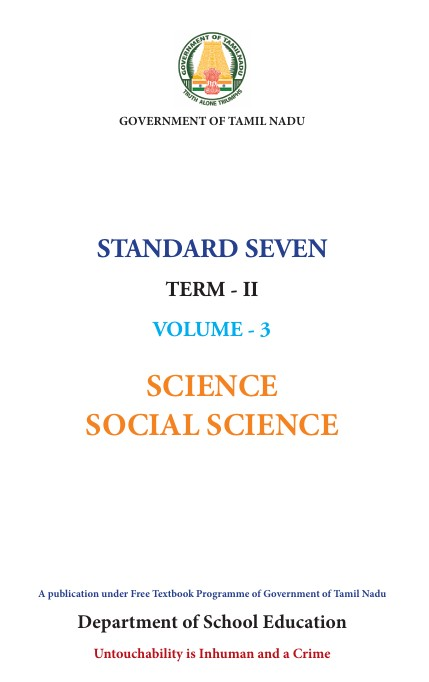
The Science textbook for standard Seven has been prepared following the guidelines given in the National Curriculum Framework 2005. The book enables the reader to read the text, comprehend and perform the learning experiences with the help of teacher. The Students explore the concepts through activities and by the teacher demonstration. Thus the book is learner centric with simple activities that can be performed by the students under the supervision of teachers.
The Second term 7th Science book has six units.
Two units planned for every month including computer science chapter has been introduced.
Each unit comprises of simple activities and experiments that can be done by the teacher through demonstration if necessary student’s can perform them.
Colorful infographics and info-bits enhance the visual learning.
Glossary has been introduced to learn scientific terms.
The “Do you know?” box can be used to enrich the knowledge of general science around the world.
I C T Corner and Q R code has been introduced in each unit for the first time to enhance digital science skills.
Download the QR code scanner from the Google play store or Apple App Store into your Smart phone.
Open the QR code scanner application
Once the scanner button in the application is clicked, camera opens and then bring it closer to the Q R code in the text book.
Once the camera detects the Q R code, a U R L appears in the screen.
Click the U R L and go to the content page.
HISTORY |
|
|
UNIT |
TITLES |
MONTH |
HISTORY UNIT 1 |
OCTOBER MONTH |
|
HISTORY UNIT 2 |
NOVEMBER MONTH |
|
HISTORY UNIT 3 |
NOVEMBER AND DECEMBER MONTH |
|
Geography |
|
|
Geography UNIT 1 |
OCTOBER MONTH |
|
Geography UNIT 2 |
NOVEMBER MONTH |
|
CIVICS |
|
|
CIVICS UNIT 1 |
OCTOBER MONTH |
|
CIVICS UNIT 2 |
NOVEMBER MONTH |

E BOOK

ASSESSMENT
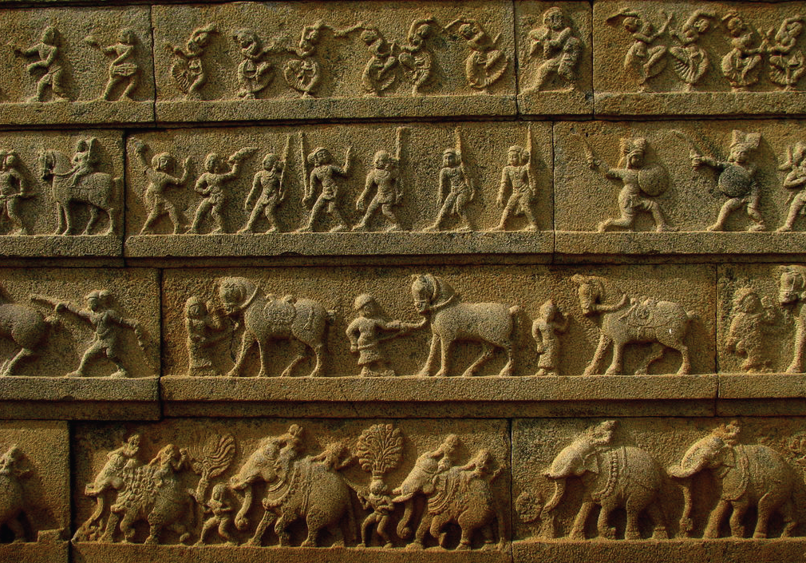
To know the circumstances that led to the rise and expansion of Vijayanagar and Baamani kingdoms
To familiarise ourselves with the administration, military organisation and the economic life during the time of their reign
To know the contribution of Vijayanagar and Baamani rulers to literature art and architecture
The political condition of India in the fourteenth century provided great opportunities for the rise of new kingdoms in the south. The repressive measures of the temperamental Muslim king Muhammad-bin-Tughlaq led to the rise of many new independent states. In the south, Vijayanagar and Gulbarga or Baamani emerged as two great kingdoms. The Baamani kingdom spread all over the Maharashtra region and partly over Karnataka. Ruled by 18 monarchs, it lasted for nearly 180 years. Early in the sixteenth century, it collapsed and split into five sultanates Bijapur, Ahmednagar, Golconda, Bidar and Berar. The state of Vijayanagar continued to flourish for nearly 200 years. Ultimately Vijayanagar’s wealth and prosperity induced the Muslim Deccan kingdoms to launch a combined war against it. In 1565, the battle of Talikota, finally they could succeed in crushing Vijayanagar Empire.
Vijaya nagara , the ‘city of victory’, was established in southern Karnataka by two brothers named Harihara and Bukka. According to one tradition, Vidyaranya, head of the Saivite Sringeri mutt, instructed them to abandon their service to the Tughluqs and rescue the country from Muslim authority. The new kingdom was called Vidyanagara for a time in honour of the spiritual teacher Vidyaranya, before it came to be called Vijaya nagara . Four dynasties, namely
Sangama (1336 to 1485), Saluva (1485 to 1505), Tuluva (1505 to 1570) and Aravidu (1570 to 1646), ruled this kingdom.
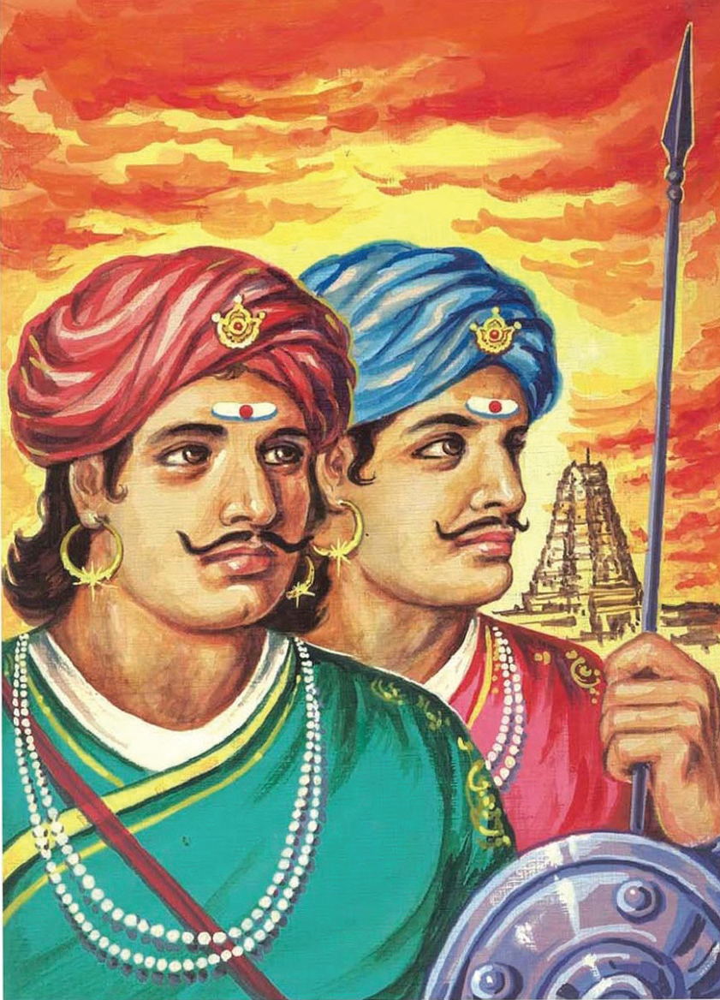
The fertile regions between the rivers Krishna and Tungabhadra and the Krishna-Godavari delta were the zones of conflict among the rulers of Vijayanagar, Baamani and Odisha. The valour of the first two brothers, Harihara and Bukka, of the Sangama dynasty protected the new kingdom from the superior forces of the Baamani sultanate, which had been established about a decade after the foundation of Vijaya nagara .
Box item Begins
Bukka one’s son Kumara Kampana ended the sultanate in Madurai and succeeded in establishing Nayak kingdom there. The conquest of the Madurai Sultanate by the Vijaya nagara empire is described in detail in the poem Madura Vijayam composed by Kumara Kamapana’s wife Gangadevi . Box item Ends
When King Bukka died, he had left behind a large territory to his son Harihara second to rule. Harihara two’s impressive achievement was securing Belgaum and Goa from the Baamani kingdom. Harihara’s son Devaraya first defeated Gajapati kings of Odisha. His successor Devaraya second was the greatest ruler of the Sangama dynasty. He began the practice of recruiting Muslim fighters to serve him and to train him in the new methods of warfare.
After Devaraya II, the Vijayanagar Empire went through a crisis. The able commander of the Vijayanagar army, Saluva Narasimha, making use of the situation declared himself the emperor, after murdering the last ruler of Sangama dynasty, Virupaksha Raya II. But the Saluva dynasty founded by Saluva Narasimha came to an end with his death. When Naras Nayaka, his able general, seized power, it ushered in the Tuluva dynasty.
Krishnadevaraya who reigned for 20 years was the most illustrious rulers of the Tuluva dynasty. His first step after ascending the throne was to bring under control the independent chieftains in the Tungabhadra river basin. After succeeding in this effort, his next main target was Gulbarga. The Baamani sultan, Mahmud Shah, had been overthrown and kept in imprisonment by his minister. Krishnadevaraya freed the sultan and restored him to the throne. Similarly, he forced a war on Prataparudra, the Gajapati ruler of Odisha. Prataparudra negotiated for peace and offered to marry off his daughter to him. Acceptingthe offer, Krishnadevaraya returned the territory he had conquered from Prataparudra. Krishnadevaraya, with the assistance of the Portuguese gunners, could easily defeat the Sultan of Golconda and subsequently take over Raichur from the ruler of Bijapur.
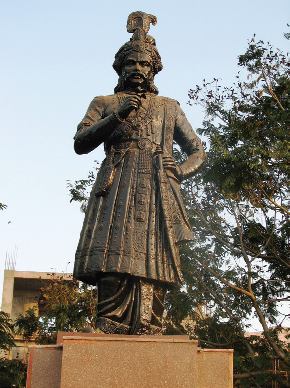
Krishnadevaraya built huge irrigation tanks and reservoirs for harvesting rainwater. He built the famous temples of Krishnaswamy, Hazara Ramaswamy and Vithalaswamy in the capital city of Hampi. He distributed the wealth he gained in wars to all major temples of South India for the purpose of constructing temple gateways (gopura), called ‘Rayagopuram,’ in his honour.
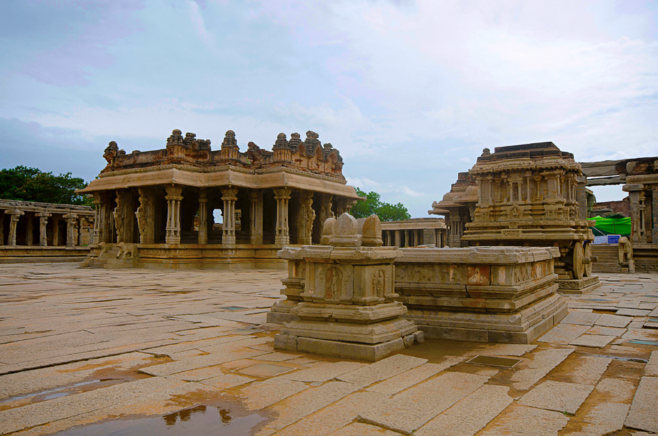
He recruited a large army and built many strong forts. He imported large number of horses from Arabia and Iran, which came in ships to Vijayanagar ports on the west coast. He had good friendly relationship with the Portuguese and Arabian traders, which increased the Empire’s income through customs.
Krishnadevaraya patronised art and literature. Eight eminent luminaries in literature known as ashtadiggajas adorned his court. Alasani Peddana was the greatest of them all. Another notable figure was Tenali Ramakrishna.
Krishnadevaraya was succeeded by his younger brother Achtyuda Deva Raya. After the uneventful reigns of Achtyuda Deva Raya and his successor Venkata one, Sadasiva Raya, a minor, ascended the throne. His regent Rama Raya, the able general of the kingdom, continued as a de facto ruler, even after Sadashiva Raya attained the age for becoming the king. He relegated Sadasiva Raya to a nominal king. In the meantime, the sultans of Deccan kingdoms succeeded in forming a league to fight the Vijayanagar Empire. The combined forces of the enemies met at Talikota in 1565. In the ensuing battle, known as Raksha Tangadi (Battle of Talikota), Vijayanagar was defeated. There was terrible human slaughter and pillaging the capital city of Hampi. All the buildings, palaces and temples were destroyed. The beautiful carvings and sculptures were desecrated. The glorious Vijayanagar Empire had ceased to exist.
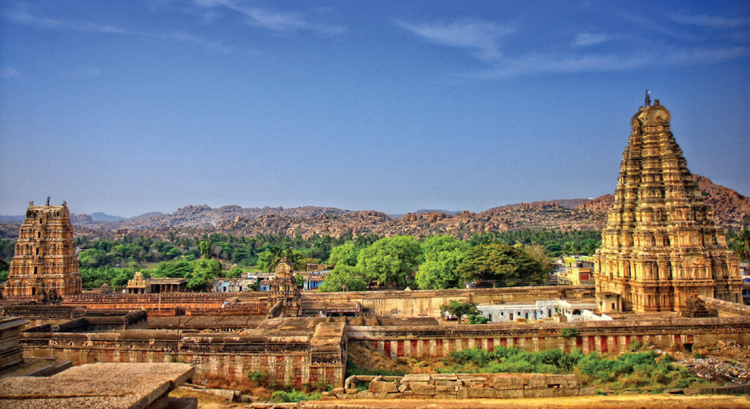
Box item Begins
The site of the city of Vijayanagar on the bank of the river Tungabhadra in eastern Karnataka is now called Hampi. Hampi is in ruins and the UNESCO has declared it a heritage site.
Box item Ends
Rama Raya was killed on the battlefield and his brother Tirumala deva Raya managed to escape along with the king Sadasiva Raya. Tirumala deva Raya moved to Chandragiri carrying all the treasures and wealth that could be salvaged. There he began the rule of Aravidu dynasty.
The Aravidu dynasty built a new capital at Penu konda and kept the empire intact for a time. Internal dissensions and the intrigues of the sultans of Bijapur and Golconda, however, led to the final collapse of the empire about 1646.
State
Kingship was hereditary, based on the principle of primo geniture. But in some instances, the reigning rulers, in order to ensure peaceful succession, nominated their successors. There were also instances of usurpation. Saluva Narasimha usurped the throne and it led to the replacement of Sangama dynasty with Saluva dynasty. The practice of appointing a regent to look after the administration, when a minor succeeded the throne, was also prevalent.
Structure of Governance
The empire was divided into different mandalams (provinces), nadus (districts), sthalas (taluks) and finally into gramas (villages). Each province was administered by a governor called Mandalesvara. The lowest unit of the administration was the village. Each village had a grama sabha. Gauda, village headman, looked after the affairs of the village.
The army consisted of the infantry, cavalry and elephant corps. The army was modernised and Vijayanagar army began using firearms. The combination of firearm and cavalry made them one of the most feared armies in India.
Economic Condition
The Vijayanagar Empire was one of the richest states then known to the world. Several foreign travellers, who visited the empire during the fifteenth and the sixteenth centuries, left behind glowing accounts of its splendour and wealth, The emperors issued a large number of gold coins called Varahas.
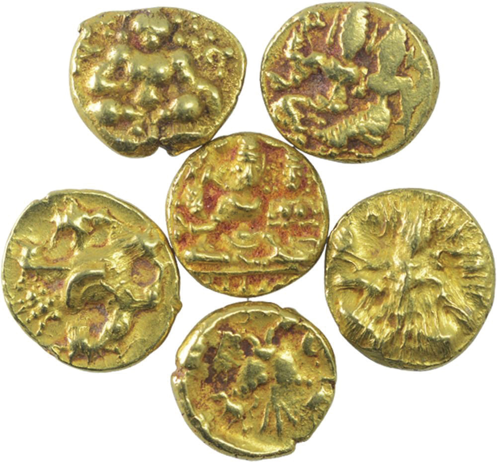
Agriculture
It was the policy of its rulers to encourage agriculture in different parts of the empire by following a wise irrigation policy. Apart from the state, there were wealthy landholders and temples that invested in irrigation to promote agriculture. Abdur Razzaq, the visiting Persian emissary to Krishnadevaraya’s Court, records the huge tank built with the help of Portuguese masons. Channels were constructed to supply water from the tank to different parts of the city. The city was well stocked with a variety of agricultural goods.
Cottage Industries
Vijayanagar’s agricultural production was supplemented by numerous cottage-scale industries. The most important of them were textile, mining and metallurgy. Crafts and industries were regulated by guilds. Abdur Razzaq, the makes a reference to separate guild for each group of tradesmen and craftsmen.
Trade
During the Vijayanagar Empire, inland, coastal and overseas trade flourished in goods such as silks from China, spices from the Malabar region and precious stones from Barma (Myanmar). Vijayanagar traded with Persia, South Africa, Portugal, Arabia, China, Southeast Asia and Sri Lanka.
Contribution to Literature
Under the patronage of Vijayanagar rulers, religious as well as secular books were written in different languages such as Sanskrit, Telugu, Kannada and Tamil. Krishnadeva Raya wrote Amuktamalyada, an epic in Telugu and also a Sanskrit drama Jambaavati Kalyanam. Tenali Ramakrishna authored Pandurangamahatyam. Scholars like Srinatha, Pothana, Jakkama and Duggana translated Sanskrit and Prakrit works into Telugu.
Box item Begins
Amuktamalyada is considered a masterpiece in Telugu literature. It relates the story of the daughter of Periaalvaar, Goda Devi (Andal), who used to wear the garlands intended for Lord Ranganatha before they were offered to the deity, and hence the name Amuktamalyada who wears and gives away garlands.
Box item End
Contribution to Architecture
The temple building activity of the Vijayanagar rulers produced a new style called the Vijaya nagara style. Prominence of pillars and piers, in large numbers, and the manner in which they were sculptured are hallmarks of the Vijaya nagara style. Horse was the most common animal to be depicted on the pillars. The structures have a mandapam (open pavilion) with a raised platform, generally meant for seating the deity on special occasions. These temples also have a marriage hall with elaborately carved pillars.
Foundation and Consolidation of the Baamani Kingdom
Alauddin Hasan, also known as Hasan Gangu, seized Daulatabad and declared himself sultan under the title of Bahman Shah in 1347. In his effort, this Turkish officer of Daulatabad (Devagiri) was supported by other military leaders in rebellion against the sultan of Delhi,
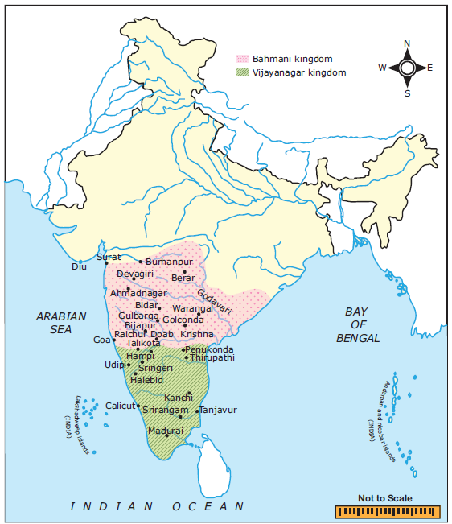
Muhammad bin Tughluq. In two years, Ala-ud-din Hasan Bahman Shah shifted his capital to Gulbarga. His successors found it difficult to organise a stable kingdom even around Gulbarga. So the capital was again shifted to Bidar in 1429. There were 18 monarchs of the Baamani dynasty.
Alauddin Hasan Bahman Shah (1347 to 1358)
Alauddin Hasan ruled for 11 years. His attempt to exact an annual tribute from the state of Warangal, the Reddi kingdoms of Rajahmundry and Kondavidu, led to frequent wars. Alauddin Bahman Shah divided the kingdom into four territorial divisions called tarafs. A governor was appointed for each province. He commanded an army, was solely responsible for its administration and for the collection of the revenue. The system worked well under a powerful king, but its dangers became apparent during the reign of a weak ruler.
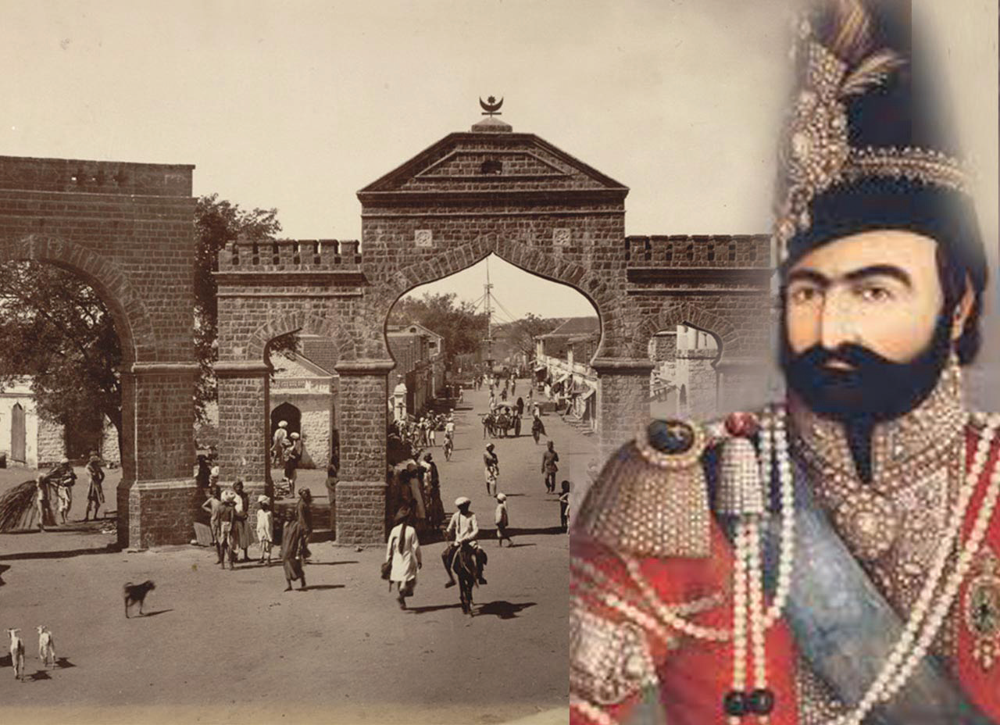
Muhammad Shah first (1358 to 1375)
Muhammad shah first succeeded Bahman Shah. He waged two wars with Vijayanagar but couldn’t gain from it. But his attack on Warangal in 1363 earned him a large property and wealth, including the important fortress of Golconda and his treasured turquoise throne, which thereafter became the throne of the Baamani kings.
Turquoise is a semi precious stone sky blue in colour. Turquoise throne is one of the bejewelled royal seats of Persian kings described in Firdausi’s Shah Nama.
Muhammad Shah laid a solid foundation for the kingdom. His system of government continued even after the Baamani kingdom disintegrated into five sultanates. He built two mosques at Gulbarga. One, the great mosque, completed in 1367, measures 216 by 16 feet and has a roofed courtyard. A large number of Arabs, Turks and notably Persians began to immigrate to the Deccan, many of them at the invitation of Sultan Muhammad first and there they had a strong influence on the development of Muslim culture during subsequent generations.
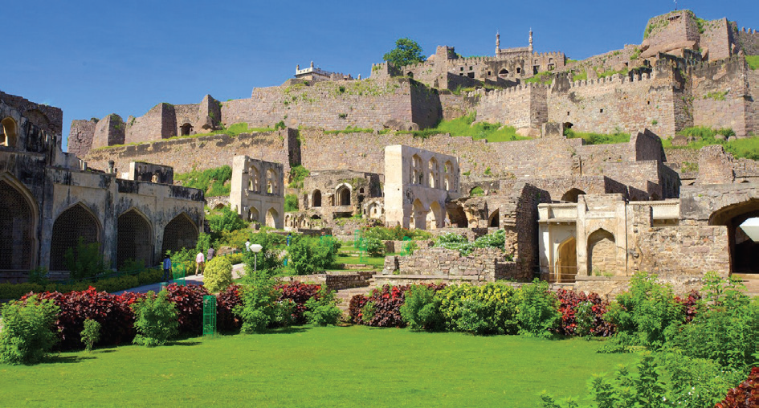
Box item Begins
The Golconda Fort is located about 11 kilometres from Hyderabad on a hill 120 meters height. The fort is popular for its acoustic architecture. The highest point of the fort is Bala Hissar. It is believed that there is a secret underground tunnel, which leads from the Durbar Hall to one of the palaces at the foot of the hills .
Box item Ends
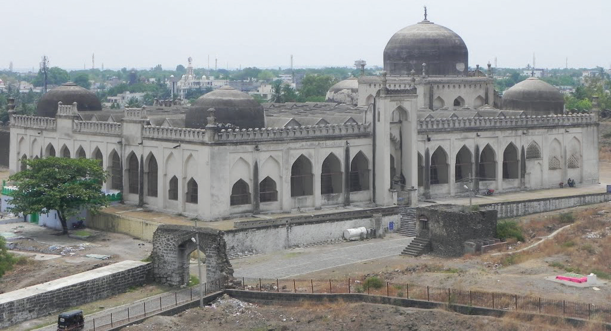
Successors of Muhammad Shah first
Mujahid, the son of Muhammad shah, ascended the throne. However, on his return to Gulbarga from the expedition against Vijayanagar, he was assassinated and the nephew of the conspirator, Daud, the uncle of Muhammad, was enthroned in 1378 as Muhammad second. Muhammad second’s reign was peaceful, and the sultan spent much of his time building his court as a centre of culture and learning.
There were constant wars between the Baamani and Vijayanagar rulers over the fertile Tungabhadra Krishna region. The threat also came from the north, especially from Malwa and Gujarat. The noteworthy ruler after eight and a half decades (1377 to 1463) was Muhammad third (1463 to 1482). Muhammad third reigned for 19 years. For most of these years, the lieutenant of the kingdom was Mahmud Gawan, the most notable personality of the time.
Box item Begins
Eight ministers of the Baamani state:
1 . Vakil-us-saltana or lieutenant of the kingdom, who was the immediate subordinate authority of the sovereign.
2 . Peshwa who was associated with the lieutenant of the kingdom .
3 . Waziri-kull who supervised the work of all other ministers .
4 . Amir-i-jumla, minister of finance .
5 . Nazir, assistant minister for finance .
6 . Wasir-i-ashraf, minister of foreign affairs .
7 . Kotwal or chief of police and city magistrate in the capital and
8. Sadr-i-jahan or chief justice and minister of religious affairs and endowments.
Box item Ends
A Persian by birth, Mahmud Gawan was well-versed in Islamic theory, Persian and Mathematics. He was also a poet and a prose writer. The Baamani king Ala-ud-din Hasan Bahman Shah greatly impressed by his wisdom and military genius, recruited him. He served with great distinction as the Prime Minister under Muhammad III and contributed extensively to the development of the Baamani kingdom.
Gawan was known for his military campaigns as well as administrative reforms. He used Persian chemists to teach the Baamani army about the preparation and the use of gunpowder. In his war against the Vijayanagar kings in Belgaum, he used gunpowder. In order to tighten the administration and to curb the power of provincial governors, who often functioned as virtual kings, Gawan divided the existing four provinces of the Baamani Sultanate into eight provinces so as to limit the area under the rule of each governor and to make the provincial administration more manageable.
He also placed some districts in the provinces directly under the central administration. Gawan sought to curtail the military powers of the governors by allowing them to occupy only one fort in their territory. The sultan kept the other forts under his direct control. The royal officers who were given land assignments as pay were made accountable to the sultan for their income and expenditure.
The administrative reforms introduced by Gawan improved the efficiency of the government, but curtailed the powers of the provincial chiefs, who were mostly Deccanis. So the already existing rivalry among nobles such as Deccanis and Pradesis (foreigners) further intensified and conflicts broke out.
Gawan became a victim of this tussle for power. The Deccani nobles grew jealous of his success and considered him as an obstacle to their rise. They manipulated by forging a letter to implicate Gawan in a conspiracy against the sultan. Sultan, who himself was not happy with Gawan’s dominance, ordered his execution.
Decline of Baamani Kingdom
Gawan’s execution prompted several of the foreign nobles who were considered the backbone of the state to leave for their provinces. After Sultan Muhammad third’s death, Mahmud or Shihabuddin Mahmud reigned as the sultan until his death in 1518. His long rule is noted for the beginnings of the process of disintegration. After him, four of his successors on the throne were kings only in name. During this period, the Sultanate gradually broke up into five independent Deccan kingdoms: Bidar, Bijapur, Ahmednagar, Berar and Golconda.
Contribution of Baamani Sultans
Architecture
The contribution of Baamani kings to architecture is evident in Gulbarga. Archaeological excavations done in the site of the kingdom has helped to unearth palaces, halls of public audience, ambassadors’ residences, arches, domes, walls and citadels. These finds are illustrative of their architectural skill.
Education
The founder of the Baamani kingdom Alauddin Hasan Shah was educated at Multan at the initiative of Zabar Khan, a general of Alauddin Khalji. On his accession, he took special care in founding a school to educate his sons. His son Muhammad first was a patron of learning. He opened institutions for the purpose of educating the children of noble families in the art of soldiery. Sultan Firoz, the eighth Baamani king was a linguist and a poet. Later his successors founded schools in Gulbarga, Bidar, Daulatabad and Kandahar. Boarding and lodging at the king’s expenses were provided in these schools. Mahmud Gawan’s world famous madrasa in Bidar, with a large library, containing a collection of 3000 manuscripts, is illustrative of the importance given to scholarship and education by Gawan.
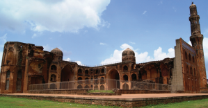
GLOSSARY |
|||
|
Conflict |
|
|
|
|
|
|
|
|
|
|
|
|
|
|
|
|
|
|
|
|
|
|
|
|
|
|
|
|
|
|
|
|
|
|
|
|
|
|
|
|
|
|
1 . Who was the greatest ruler of Sangama Dynasty?
A) Bukka
B ) Devaraya second
C ) Harihara second
D) Krishna Devaraya
2 . Which was the most common animal depicted on the pillars of Vijaya nagara style?
A) Elephant
b) Horse
c) Cow
d) Deer
3 . Who was the last ruler of the Sangama Dynasty?
a) Rama Raya
b ) Tirumaladeva raya
c) Devaraya second
d) Virupaksha Raya second
4 . Who ended the Sultanate in Madurai?
a) Saluva Narasimha
b) Devaraya second
c) Kumara Kampana
d) Tirumaladeva Raya
5. Name the Baamani King who was a linguist and a poet.
a) Alauddin Hasan Shah
b) Muhammad first
c) Sultan Firoz
d) Mujahid
1 . Dash was the capital of Aravidu dynasty.
2 . Vijayanagar emperors issued a large number of gold coins called Dash .
3 . Mahmud Gawan used DASH chemists to teach the preparation and use of gunpowder.
4 . In Vijaya nagara administration DASH looked after the affairs of villages.
1 . Vijaya nagara - Ruler of Odisha
2 . Prataparudra - Ashtadiggajas
3 . Krishna Devaraya - Pandurangamahatyam
4 . Abdur Razzaq - City of victory
5 . Tenali Ramakrishna - Persian emissary
1 . Assertion (A): The Vijayanagar army was considered one of the feared armies in India.
Reason (R) Vijayanagar armies used both firearm and cavalry.
a) Reason is not the correct explanation of Assertion
b) Reason is correct explanation of Assertion
c) Assertion is correct and Reason is wrong
d) (Assertion) and (Reason) are Correct
2 . Find out the wrong pair
a) Silk - China
b) Spices - Arabia
c) Precious stone - Barma
d) Madurai Vijayam Gangadevi
3 . Find the odd one out
Harihara second,
Muhammad first
Krishnadeva Raya,
Devaraya first.
4 . Consider the following statements and find out which is / are correct
ROMAN ONE Turquoise throne is one of the bejewelled royal seats of Persian kings described in Firdausi’s Shah Nama.
ROMAN TWO The fertile regions between the rivers Krishna and Tungabhadra and Krishna Godavari delta were the zones of conflict among the rulers of Vijayanagar, and Baamani.
ROMAN THREE Muhammad first was educated at Multan.
ROMAN FOUR Mahmud Gawan served with great distinction as the Prime Minister under Muhammad third.
a) ROMAN ONE, ROMAN TWO, ROMAN FOUR are correct
b) ROMAN ONE, ROMAN TWO, ROMAN THREE are correct
c) ROMAN TWO, ROMAN THREE, ROMAN FOUR are correct
d) ROMAN THREE, ROMAN FOUR, are correct
1 . Harihara and Bukka were the founder of Baamani kingdom.
2 . Krishnadeva Raya, who reigned for 20 years, was the most illustrious rulers of Sangama dynasty.
3 . Alasani Peddana was the greatest of all Ashtadiggajas.
4 . Kingship of Vijayanagar administration was hereditary, based on the principle of primo geniture.
5 . There were 18 monarchs of the Baamani dynasty.
1. The four dynasties of Vijaya nagara kingdom with reference to prominent rulers of each dynasty.
2. Battle of Talikota.
3. The structure of governance in Vijaya nagar kingdom.
4. The five independent kingdoms of Deccan Sultanate.
5. The educational reforms of Ala-ud-din Hasan Shah.
1. Discuss the career and achievements of Krishna Devaraya.
Discuss the causes for the decline of Vijaya nagar rule.
To what extent the Baamani sultans contributed to it.
Map 1. Highlight the boundaries of Vijayanagar Empire and Baamani kingdom.
1. Name the kingdom ruled by 18 monarchs which lasted for nearly 180 years. |
2. Name the Baamani Sultan who was restored to the throne by Krishna Devaraya |
3. Name the book written by Krishnadevaraya in Sanskrit. |
4. Where did Hasan Bahman Shah shift his capital. |
Collect information about temples in Tamil Nadu with the influence of Vijaya nagara style
of art and architecture. Also read the stories of Tenali Ramakrishna in the classroom.
1. J L Mehta, Advanced Study in the history of Medieval India: Mughal Empire, Volume 2, 15 26 to 17 not 7, Sterling Publishers, 2011.
2. Burton Stein, Vijaya nagara , The New Cambridge History of India, 1989.
3. Abraham Eraly, The Emperors of Peacock Throne, Penguin, 2007


To trace the foundation and establishment of Mughal Empire in India.
To acquaint ourselves with the career and achievements of six great Mughal kings.
To understand the administrative and religious policies of the Mughal rulers.
To gain knowledge about the cultural contributions of Mughals.

A new empire began in India with the arrival of the Mughal king Babur. Except for the brief reign of Sher Shah of Sur dynasty, the Mughal rule lasted from A.D.(CE) 1526 to 1707. These were the years when the fame of the Great Mughals of India spread all over Asia and Europe. After six Great Mughal Emperors, the empire began to disintegrate.
Ancestry and His Early Career
Zahiruddin Muhammad Babur, popularly known as Babur, was the founder of the Mughal Empire in India. The term ‘Mughal’ can be traced to Babur’s ancestors. Babur was the great grandson of Timur (on his father’s side). On his mother’s side, his grandfather was Yunus Khan of Tashkent, who was known as the GreatKhan of the Mongols and the thirteenth in the direct line of descent of Chengiz Khan. Babur was born on 14 February 1483. He was named Zahir-ud-din (Defender of Faith) Muhammad. He inherited Farghana, a small kingdom in Central Asia, when he was 12 years old. But he was soon driven out from there by Uzbeks. After 10 years of adversity, Babur established himself as the ruler of Kabul.

Foundation of the Mughal Empire
In Kabul, Babur set his sights eastward, reminded by the memory of Timur’s Indian invasion . In 1505 the very year after he took Kabul, Babur led his first expedition towards India. Yet he was preoccupied with the Central Asian affairs. He did not have any ambition beyond Punjab till 1524. Then a greater opportunity came knocking . Dilawar Khan, who was Daulat Khan Lodi’s son, and Alam Khan, who was the uncle of Sultan of Delhi, arrived in Kabul to seek Babur’s help in removing Ibrahim Lodi from power . Babur defeated Ibrahim Lodi in the famous Battle of Panipat in 1526 and occupied Delhi and Agra . Following Babur’s victory in this battle, Mughal dynasty came to be established in India with Agra as its capital . Babur’s Military Conquests Babur defeated Rana Sanga and his allies at Khanwa in 1527. He won the war against the chief of Chanderi in 1528 and prevailed over the Afghan chiefs of Bengal and Bihar in 1529 . Babur died in 1530 before he could consolidate his victories. Babur was a scholar in Turkish and Persian languages. He recorded his impressions about Hindustan, its animals, plants and trees, flowers and fruits in his autobiography Tuzuk I Baburi .

Following the tradition set by Chengiz Khan, who nominated the most deserving among his sons as his heir, Babur chose his favourite and eldest son, Humayun, as his heir .
Humayun, on his accession to the throne, divided his inheritance as per his father’s will and accordingly his brothers, Kamran, Hindal and Askari, got a province each . Yet each of the brothers aspired for the throne of Delhi . Humayun also had other rivals and notable among them was the Afghan Sher Shah Sur, the ruler of Bihar and Bengal . Sher Shah defeated Humayun at Chausa (1539) and again at Kanauj (1540) . Humayun, defeated and overthrown, had to flee to Iran . With the help of the Persian ruler Shah Tahmasp of the Safavid dynasty, Humayun succeeded in recapturing Delhi in 1555. But he died in 1556 when he fell down the stairs of his library in Delhi

Sher Shah (1540 to 1545)
Sher Shah was the son of the Afghan noble Hasan Suri, ruler of Sasaram in Bihar. After overthrowing Humayun, Sher Shah started the rule of Sur dynasty at Agra. During his brief reign, he built an empire stretching from Bengal to the Indus, excluding Kashmir. He also introduced an efficient land revenue system. He built many roads, and standardised coins, weights and measures.

Accession to Throne
After the death of Humayun in 1556, his 14-year-old son Akbar was crowned the King. Humayun’s trusted general Bairam Khan became the regent and ruled on behalf of Akbar, as the latter was a minor.


Hemu, a general of Sur dynasty, soon captured Agra and Delhi in 1556. In the same year, Bairam Khan defeated and killed Hemu in the battle at Panipat (Second Battle of Panipat, 1556). As Bairam Khan was murdered in Gujarat, allegedly at the instance of Akbar who could not tolerate his dominance in day-to-day governance of the kingdom, Akbar assumed full control of the government. Akbar brought most of India under his control through conquests and alliances.

Conquests of Women Rulers
Akbar conquered Malwa and parts of Central India. His defeat of Rani Durgavati, a ruler in the Central Province, is not appreciated, since the brave Rani did him no harm. Yet urged by his ambition to build an empire, Akbar had no consideration for the good nature of the ruler . Similarly, another woman ruler Akbar had to confront in South India was the famous Rani Chand Bibi, regent of Ahmednagar . The fight this woman put up impressed the Mughal army so much that they gave her favourable terms of peace .

Battle of Haldighati
Akbar defeated Rana Uday Singh of Mewar and captured the fort of Chittoor in 1568 and then Ranthambore in 1569 . In 1576, he won over Uday Singh’s son Rana Pratap at the Battle of
Haldighati . Though defeated, Rana Pratap escaped on his horse, Chetak, and continued his fight, leading a life in the jungle . The memory of this gallant Rajput is treasured in Rajputana, and many a legend has grown around him .

Commercial Access to Arabia, Southeast Asia and China
Akbar’s conquest of Gujarat helped him to establish control over Gujarat’s overseas trade with the Arabs and the Europeans . Akbar’s military campaigns in East Bihar and Odisha and victory over Bengal facilitated access to Southeast Asia and China .
Military Campaigns in the North-West (1585 to 1605)
Among other conquests of Akbar, the important were the campaigns he launched in the North West of India . Akbar added Kandahar, Kashmir and Kabul to the Mughal Empire. His battles in the Deccan led to the annexation of Berar, Khandesh and parts of Ahmednagar . Under Akbar, the Mughal Empire extended from Kashmir in the north to Godavari in the south, and from Kandahar in the west to Bengal in the east . Akbar died in 1605 and his mortal remains were buried at Sikandra near Agra.
Akbar’s Religious Policy
Akbar, realising that the gains of affection would be more enduring than the gains of the sword, made all out efforts to win the goodwill of the Hindu nobles and the Hindu masses . He abolished the jizya (poll tax) on non-Muslims and the tax on Hindu pilgrims . He also married a girl of a noble Rajput family . Later, he married off his son to a Rajput girl as well . He appointed Rajput nobles to important and top positions in his Empire . Raja Man Singh of Jaipur was sent as governor of Kabul once . Akbar treated all the religious groups fairly with generosity of spirit . The Sufi saint Salim Chishti and the Sikh Guru Ramdas received Akbar’s utmost respect and regard . Guru Ramdas was gifted a plot of land in Amritsar, where the Sikh shrine Harmandir Sahib was later built . In Ebaadat Khana, a hall in the new Fatehpur Sikri city, constructed by Akbar, scholars of all religions met for a discourse .
Contributions to culture
Akbar was a great patron of learning . His personal library had more than four thousand
manuscripts . He patronised scholars of all beliefs and all shades of opinions . He extended his benevolence to authors such as Abul Fazl, Abul Faizi and Abdur Rahim Khan I Khanan, the great storyteller Birbal, competent officials like Raja Todar Mal, Raja Bhagwan Das and Raja Man Singh . The great composer and musician Tansen and artist Daswant adorned Akbar’s court as well .
Akbar was succeeded by Prince Salim, his son through a Rajput wife, who was also named Nuruddin Muhammad Jahangir (Conqueror of the World).

Jahangir was more interested in Jahangir art and painting and gardens and flowers, than in running the government. So Jahangir’s wife, Mehrunnesa, known as Nur Jahan, was the real power behind the throne. Jahangir carried on to some extent his father’s traditions. The toleration of religions of Akbar’s time continued in Jahangir’s time.

But Jahangir ordered the execution of Sikh leader Guru Arjun (or Arjan) for helping his rebellious son Khusrau, who contested for the throne . This resulted in a prolonged fight between the Sikhs and the Mughals . As a result of this confrontation, the Mughals had to lose control over the trade routes to Afghanistan, Persia and Central Asia . The loss of Kandahar exposed India to invasions from the North-West . Ahmednagar, though conquered by Jahangir, remained a source of trouble throughout his reign. Jahangir granted trading rights to the Portuguese and later to the English . Thomas Roe, a representative of King James first of England, visited Jahangir’s court and this agreement paved the way for the British establishing their first factory in Surat .

Prince Khurram, after a struggle for power, succeeded Jahangir as Shah Jahan (King of the World). Shah Jahan ruled for thirty years . He led a campaign against Ahmednagar and annexed it in 1632 . Bijapur and Golconda were also conquered later. Some Maratha warriors, notably Shahji Bhonsle (Shivaji’s father), entered the services of the Deccan kingdoms and trained bands of Maratha soldiers to fight against the Mughals . So there was a sustained resistance in the Deccan to the Mughals from the Marathas too. Shah Jahan was intolerant towards other religions than Islam . In his reign came the climax of Mughal splendour, which is detailed in the next part of this lesson . Shah Jahan fell ill in 1657 and a war of succession broke out among his four sons . Aurangzeb emerged successful after killing his three brothers, Dara, Shuja and Murad. Shah Jahan passed the last eight years of his life as a prisoner in the Shah Burj of the Agra Fort .
Aurangzeb, the last of the Great Mughals, started off his reign by imprisoning his old father . He assumed the title Alamgir (the Conqueror of the World). He reigned for 48 years . He was no lover of art like his grandfather Jahangir and architecture like his father Shah Jahan .

He tolerated no religion excepting Islam. He re-imposed the jizya tax on Hindus and excluded them from office as far as possible . Between 1658 and 1681, Aurangzeb remained in the North and suppressed the revolt of Bundelas, Jats, Satnamis and Sikhs. Aurangzeb’s expansion in the North-East resulted in a war with the Ahoms of Kamarupa (Assam) . The kingdom came under repeated attacks of the Mughals, but it could not be subdued totally.

Relationship with Rajputs and Marathas
Aurangzeb’s hostility towards Rajputs led to prolonged wars with them. To make matters worse, his rebellious son, Prince Akbar, joined the forces of Rajputs and created troubles to him. Prince Akbar entered into a pact with Shivaji’s son Shambuji in the Deccan. So Aurangzeb had to march to the Deccan in 1689. In the Deccan, Aurangzeb brought Bijapur and Golconda into submission. Shivaji had carved out a kingdom, proclaiming himself the Emperor of Maratha State (1674). Aurangzeb could not stop the rise of Shivaji in the southwest. But he vanquished Shivaji’s son and successor Shambuji, who was captured and executed by him. Aurangzeb remained in the Deccan until his death in 1707, at the age of nearly 90. By the end of Aurangzeb’s rule, the British had firmly established their trade centres at Madras (Chennai), Calcutta (Kolkata) and Bombay (Mumbai). The French had their main trade centre in Pondicherry (Puducherry).
The Mughal Administration
Central Administration
The Mughals provided a stable administration in larger parts of India . The Emperor was the supreme head of the Mughal administrative system . He was the law maker, the chief executive, the commander-in-chief of the army and the final dispenser of justice . He was assisted by a council of ministers . The most important officials were the Wakil (Prime Minister) and Wazir or diwan (in charge of the revenue and expenditure). Mir Bhakshi was in charge of the army . The Mir Saman looked after the royal household. The Qazi was the Chief Judge. Sadr-us-Sudr was minister for enforcing Islamic law (Sharia) .
Provincial Administration
The empire was divided into several Subhas (provinces). Each Subha was under the control of an officer called Subedar . The Subhas were further divided into districts called Sarkars . The Sarkars were subdivided into Parganas. A group of villages (Gramas) formed a Pargana .
Local Administration
The towns and cities were administered by Kotwals . Kotwals maintained law and order . The administration of villages was left in the hands of local village panchayats (informal institution of justice in villages) . The Panchayatdars (jury) dispensed justice .
Army
The Mughal army comprised infantry, cavalry, war elephants and artillery . The Emperor maintained a large number of trained and well-armed bodyguards and palace guards .
Mansabdari System
Akbar introduced the Mansabdari system . According to this system, the nobles, civil and military officials were combined to form one single service . Everyone in the service was given a mansab, meaning a position or rank . A Mansabdar was a holder of such a rank. Mansabdar rank was dependent on Zat and Sawar . The former indicated one’s status . Sawar was the number of horses and horsemen he had to maintain . His salary was fixed on the basis of the number of soldiers each Mansabdar received ranging from 10 to 10,000 . The Mansabdars were paid high salary by the Emperor. Before receiving the salary, a Mansabdar had to present his horsemen for inspection. Their horses were branded to prevent theft . The Emperor could use the troops maintained by a Mansabdar whenever he wished . The rank of Mansabdar was not hereditary during Akbar’s time . After him, it became hereditary .
Land Revenue Administration
Land revenue administration was toned up during the reign of Akbar. Raja Todar Mal, Revenue Minister of Akbar, adopted and refined the system introduced by Sher Shah. Todar Mal’s zabt system was put in place in the north and north-western provinces. According to this system, after a survey, lands were classified according to the nature and fertility of the soil. The share of the state was fixed at one-third of the average produce for 10 years. During the reign of Shah Jahan, the zabt or zabti system was extended to the Deccan provinces .
The Mughal emperors enforced the old iqta system, renaming it jagir . It is a land tenure system developed during the period of Delhi Sultanate . Under the system, the collection of the revenue of an area and the power of governing it were bestowed upon a military or civil official now named Jagirdar . Every Mansabdar was a Jagirdar if he was not paid in cash . The Jagirdar collected the revenue through his own officials . The Amal Guzar or the revenue collector of the district was assisted by subordinate officers like the Potdar, the Qanungo, the Patwari and the Muqaddams .
Those appointed to collect the revenue from the landholders were called zamindars . Zamindars collected taxes and maintained law and order with the help of Mughal officials and soldiers . The local chieftains and little kings were also called zamindars . But at the end of the sixteenth century, the zamindars were conferred hereditary rights over their zamin . The zamindar was empowered to maintain troops for the purpose of collecting revenue . The emperor granted lands to scholars, holy men and religious institutions . These lands called suyurghal were tax-free .
Religious Policy
The Mughal emperors were the followers of Islam . Akbar was very liberal in his religious policy . In Akbar’s court, the Portuguese missionaries were great favourites . Akbar tried to include the good principles in all religions and formulated them into one single faith called Din-Ilahi (divine faith) . Jahangir and Shah Jahan also followed the policy of Akbar . Aurangzeb rejected the liberal views of his predecessors . As we pointed out earlier, he re-imposed the jizya and pilgrim tax on the Hindus . His intolerance towards other religions made him unpopular among the people .
Art and Architecture

Babur introduced the Persian style of architecture to India by building many structures at Agra, Biana, Dholpur, Gwalior and Kiul (Aligarh), but only a few of them exist today. Humayun’s palace in Delhi, Din-i-Panah, was probably destroyed by Sher Shah Sur who built the Purana Qila in its place . The most prominent monument of Sher Shah’s reign was his mausoleum built at Sasaram in Bihar .

The Diwan i Khas, Diwan i Am, Panch Mahal (pyramidal structure in five stories), Rang Mahal, Salim Chishti’s Tomb and Buland Darwaza were built during Akbar’s time . Jahangir completed Akbar’s tomb at Sikandara and the beautiful building containing the tomb of Itmad ud daula, father of Nur Jahan, at Agra .

Shah Jahan’s time witnessed the climax of Mughal splendour . The famous peacock throne, covered with expensive jewels, was made for the Emperor to sit on . Then rose the world famous Taj Mahal, by the side of the Yamuna river at Agra . Besides Taj, he built the Moti Masjid, the pearl mosque at Agra, the great Jama Masjid of Delhi and the Diwan-i-Khas and Diwan-i-Am in his palace in Delhi .


During Aurangzeb’s reign, architecture did not receive much patronage . The Bibi Ka Maqbara in Aurangabad, a mausoleum built by his son Prince Azam Shah as a loving tribute to his mother in the late seventeenth century, is, however, worth mentioning .
Red Fort

Red Fort, also called Lal Qila, in Delhi was the residence of the Mughal emperors. Constructed in 1639 by Emperor Shah Jahan as the palace of his fortified capital Shajahanabad. The Red Fort is named for its massive enclosing walls of red sandstone.
Babur founded the Mughal Empire in 1526 after defeating Ibrahim Lodi in the Battle of Panipat (1526). Humayun’s unsettled conditions and Sher Shah’s victory over him in the Battle of Kanauj; Sher Shah’s efficient land revenue administration; and the introduction of coin system and standardised weights and measures are dealt with in this chapter.
Humayun’s retrieval of the Mughal Empire and his untimely death leading to the accession of his son Akbar, with Bairamkhan as the regent, and defeating Hemu, the great general of Sur dynasty, in the Battle of Panipat (1556) are described .
Akbar’s military conquests as well as his religious policy are explained .
Jahangir’s disinterest in state governance leading to dominance of his wife Nur Jahan in the Mughal Court is elaborated upon .
Shahjahan extending Mughal rule in the Deccan and the resultant conflict with Marathas are analysed .
Aurangzeb’s conquests helped to expand the Mughal Empire, but his policies against Rajputs, Marathas and Sikhs provoked resistance from them, paving the way for its downfall .
Mughal administration headed by the Emperor, who in turn was assisted by various officials, is described. Akbar’s Mansabdari system and the land revenue policy formulated by Raja Todar Mal according to the zabt system are examined .
Mughals’ contributions to culture, notably to art and architecture, are highlighted .
GLOSSARY |
|
|
|
1 |
Expedition |
A journey undertaken with the purpose of war |
போர்பயணம் |
2 |
Prolonged |
lengthy |
நீண்ட |
3 |
subdued |
conquered |
அடக்குதல் |
4 |
Rebellious |
Showing a desire to resist authority |
கலகக்கார |
5 |
Bestowed |
awarded |
மதிப்பளித்தல் |
6 |
Hereditary |
Inheritance of a title, office, or right |
பாரம்பரிய |
7 |
Enduring |
Lasting over a period of time |
நீடித்த அல்லது நீடித்த காலம் |
1 . Satish Chandra, History of Medieval India 800-1700, Orient Black swan, New Delhi, 2007.
2 . J L Mehta, Advanced Study in the history of Medieval India: Mughal Empire, Volume 2 , 15 26 to-17 not 7, Sterling Publishers, 2011.
3 . Harbans Mukhia, The Mughals of India, Blackwell Publishing, New Delhi, 2009.
4 . Abraham Eraly, The Emperors of Peacock Throne, Penguin, 2007.

1 . Who introduced the Persian style of architecture in India?
a) Humayun
b) Babur
c) Jahangir
d) Akbar
2 . In which battle did Akbar defeat Rana Pratap?
a) Panipat
b) Chausa
c) Haldighati
d) Kanauj
3 . Whose palace in Delhi was destroyed by Sher Shah?
a) Babur
b) Humayun
c) Ibrahim Lodi
d) Alam Khan
4 . Who introduced Mansabdari system?
a) Sher Sha
b ) Akbar
c) Jahangir
d) Shah Jahan
5 . Who was the revenue minister of Akbar?
a) Birbal
b) Raja Bhagwan Das
c) Raja Todarmal
d) Raja Man Singh
1 . DASH was the name of the horse of Rana Pratap.
2 . Dash was a hall at FatehpurSikri where scholars of all religions met for a discourse.
3 . The Sufi saint who received Akbar’s utmost respect was DASH.
4 . During the reign of dash the Zabti system was extended to the Deccan provinces.
5 . DASH were tax-free lands given to scholars and religious institutions.
1. Babur – Ahmednagar
2 . Durga vati - Jaipur
3 . Rani Chand Bibi – Akbar
4 . Din eIahi - Chanderi
5 . Raja Man Singh – Central Province
1. Babur inherited Farghana, a small kingdom in Central Asia.
2. Humayun succeeded in recapturing Delhi in 1565.
3. Aurangzeb married a girl of a notable Rajput family.
4. Jahangir ordered execution of Sikh leader Guru Arjun for helping his son Khusrau.
5. During Aurangzeb’s reign, architecture received much patronage.
1 . Assertion (A): The British established their first factory at Surat .
Reason (R): Jahangir granted trading rights to the English .
a) Reason is the correct explanation of Assertion.
b) Reason is not the correct explanation of Assertion.
c) Assertion is wrong and Reason is correct.
d) (Assertion) and (Reason) are wrong
2 . Assertion (A): Aurangzeb’s intolerance towards other religions made him unpopular among people .
Reason (R): Aurangzeb re-imposed the jizya and pilgrim tax on the Hindus .
a) Reason is the correct explanation of Assertion.
b) Reason is not the correct explanation of Assertion.
c) Assertion is wrong and Reason is correct.
d) (Assertion) and (Reason) are wrong.
a, Kamran was the son of Afghan noble, Hasan Suri, ruler of Sasaram in Bihar.
b, Akbar abolished the jizya poll tax on non-Muslims and the tax on Hindu pilgrims.
c, Aurangzeb acceded the throne after killing his three brothers.
d, Prince Akbar entered into a pact with Shivaji’s son Shambuji in the Deccan.
(a) (2) and (3) are correct
(b) ( 3) and (4) are correct
(c) (3 ) and (4 ) are correct
(d) (3), (4) and (1) are correct
(a) Battle of Khanwa
(b) Battle of Chausa
(c) Battle of Kanauj
(d) Battle of Chanderi
(a) Sarkars
(b) Parganas
(c) Subhas
Match the father and son
Father |
Son |
1. Father Akbar |
Son Dilawar Khan |
2. Father Daulat Khan Lodi |
Son Rana Pratap |
3. Father Hasan Suri |
Son Humayun |
4. Father Babur |
Son Sher Shah |
5. Father Uday Singh |
Son Jahangir
|
1. Write the circumstance that led to the Battle of Panipat in 1526.
2. Mention the Humayun recapture the Delhi throne in 1555
3. Write a note on Mansabdari system.
1. Describe the land revenue administration of the Mughals.
2. Estimate Akbar as a patron of learning.
1. Shah Jahan’s time witnessed the climax of Mughal splendour. Support this statement in comparison with the times of other Mughal rulers.
Map
Mark the extent of Mughal Empire during the reign of Akbar and Aurangzeb with special focus on important battle fields.
Collect information about the scholars in Akbar’s court and conduct a mock Ebadat khana in the class.


To trace the origin and the growth of Maratha kingdom with particular emphasis on the role played by Shivaji in strengthening it .
To know about the administrative structure introduced by Shivaji .
To examine how far the Marathas were responsible for the decline of the Mughals .
To assess the role of Peshwas in carrying on Maratha power .
The rising power of the Marathas in the south-west posed the real danger to the Mughal Empire . Shahji Bhonsle, Shivaji’s father, an officer of the Ahmednagar State and later Bijapur, proved to be a thorn in the Fesh of the Mughals, even in Shah Jahan’s period . But it was his son, Shivaji, who attained glory among the Marathas as he could stop the Mughal Empire’s expansion in the Deccan . Shivaji was a gallant fighter, army general and a guerilla leader . He built up a band of brave mountaineers, who were loyal to him . With their help, he captured many forts and gave Aurangzeb’s commanders a tough time . As Marathas grew stronger, the Mughal Empire weakened . The Mughal Emperor had to recognise the right of the Marathas to collect their Chauth tax all over the Deccan . Warfare opened opportunities for talented commanders who contributed to the vigorous expansion of Maratha power early in the eighteenth century . The prime minister of Maratha rulers, called the Peshwas from the time of Shahu, held real power. Under the aegis of Maratha power, the Peshwas continued their supremacy until 1761 .
Geographical Features
The physical features of the Maratha country developed certain peculiar qualities among the Marathas, which distinguished them from the rest of the people of India . During the sixteenth century, the sultans of Bijapur and Ahmednagar had recruited them to serve in cavalry . Their presence was helpful to the sultans in balancing the political ambitions of the Muslim soldiers in their service . The rocky and mountainous terrain gave protection to the Marathas from invaders . It proved to be advantageous in guerrilla warfare for Marathas.
The spread of the Bhakti movement in Maharashtra helped the Maratha people develop consciousness of their identity and oneness. It promoted a feeling of unity, especially in terms of social equality, among the Marathas. In the Maratha region, the religious leaders were drawn from different social groups. Eknath, Tukaram and Ramdas were the noted Bhakti saints. Tukaram and Ramdas had considerable influence on the life of Shivaji.


Marathi language and literature also served to develop unity among the people. Hymns composed in the Marathi language by Bhakti saints were sung by people of all castes and classes.
Shivaji, born in 1627, grew up under the care of his mother, Jijabai, who influenced him

with stories from the Hindu epics, Ramayana and the Mahabharatha . Shivaji’s teacher and guardian, Dada ji Kondadev, trained him in the art of horse riding, warfare and state administration . At the age of eighteen in 1645, when he had just entered the military career, he successfully captured Konda na, a fort near Poona. The following year, he took the fort of Torna . Then he succeeded in conquering Raigarh, which was rebuilt by him .


Shivaji became totally independent after the death of his guardian Kondadev (1649) . He also got his father’s jagir transferred to him, which was earlier looked after by Kondadev . The strength of his army was Mavali foot soldiers . With their help, Shivaji conquered many of the hill forts near Poona . He captured Puranthar from the Mughals . Shivaji’s military raids angered the Sultan of Bijapur . He held Shivaji’s father captive and released him only after Shivaji promised to suspend his military raids . Shivaji kept his word and remained at peace with Bijapur from then on till his father Shahji’s death . During this period he toned up his administration .

Shivaji resumed his raids aft er his father’s death and conquered Javali (1656) from the Maratha chief Chandrarao More . He also reduced all the lesser Maratha chiefs around Pune to subordination . The soldiers of Bijapur from the hill fortresses acquired by Sultan of Bijapur were driven out and replaced with his own commanders . These moves and the defeat of Bijapur army sent to punish Shivaji alarmed the Mughal officials . When the Mughals made a punitive expedition, Shivaji boldly confronted them . In 1659 he killed Afzal Khan, a notable general of Bijapur. In 1663 he wounded and chased away the Mughal general and Aurangzeb’s uncle Shaista Khan . To cap these bold acts, he audaciously directed his soldiers to plunder Surat (1664), the major Mughal port on the Arabian Sea .
After Shivaji plundered Surat, Aurangzeb swung into action . An army under the command of a Rajput general, Raja Jai Singh, was ordered to destroy Shivaji and annex Bijapur . Shivaji finally sought peace, yielded the fortresses he had seized and accepted service as a mansabhdar in the Mughal service for the conquest of Bijapur . He also agreed to visit the imperial court at Agra, on the advice of Jai Singh only to suffer humiliation, which led him to escape, by hiding in a basket . Aurangzeb was determined to stop the Maratha interference in his expeditions against the Deccan kingdoms . He attempted to patch up with Shivaji, but those efforts failed. In 1670, the Mughal army was helpless when Shivaji again plundered Surat . In 1674, Shivaji crowned himself by assuming the title of Chhtrapati and the coronation of Shivaji was celebrated with great splendour at Raigarh, as the occasion was the founding of a new kingdom and a new dynasty . Shivaji’s aged mother Jijabai, who had lived to see her son crowned the king, passed away a few days after the coronation, with her life wish fulfilled . Shivaji spent his last years trying to bring his son Shambhuji into his ways as he had defected to the Mughals . He fell ill with fever and dysentery and died in 1680 .
Chhatra (parasol) pati (master or lord),is the Sanskrit equivalent of king or emperor, and was used by the Marathas, especially Shivaji .

Shivaji’s political system consisted of three circles . At the centre was the swaraj . Shivaji was caring and would not allow the people to be harassed in any way . In the second circle, Shivaji claimed suzerainty, but he did not administer them himself . He protected the people from loot and plunder for which they were required to pay Chauth (one-fourth of the revenue as protection money) and Sardeshmukhi (an extra one-tenth, as the chieft ain’s due). In the third circle, Shivaji’s only objective was plunder . Deshmukhs held sway over rural regions and their control was over between twenty and hundred villages . Each village had a powerful headman (Patil), who was assisted by a village accountant of a keeper of records (Kulkarni) . In the absence of a strong central government, these local community level officials functioned as the true government .
Shivaji gave utmost attention to his army and training of its personnel . In the beginning, the backbone of his army was the infantry . But as his campaigns extended into the plains, his cavalry grew in size and importance . Every soldier was selected personally by Shivaji and was taken into service on the assurance of a soldier already in service. Shivaji took great care in the maintenance and security of his forts. Retired captains holding a high reputation were put in charge of guarding the forts.
Shivaji designated eight ministers as the Ashtapradhan, each holding an important portfolio. Peshwa was the equivalent of a modern prime minister in the Maratha Empire . Originally, they were subordinates to the Chhatrapati . But, in course of time, especially from the time of Sahu Maharaja, Peshwa became the de facto Maratha ruler while the Chhatrapati was reduced to the position of a nominal ruler . Shivaji was influenced by the Mughal revenue system . The assessments were made on the actual yield, with three-fifths left to the cultivator and two-fifths taken by the government. In judicial administration, civil cases continued to be decided by the panchayat, the village council, while criminal law was based on the shastras, the Hindu law books.
Pantpradhan slash Peshwa |
Prime Minister |
Amatya slash Mazumdar |
Finance Minister
|
Shurunavis slash Sacheev |
Secretary |
Waqia-Navis |
Interior Minister
|
Sar i Naubat slash Senapati |
Commander in Chief
|
Sumant slash Dubeer |
Foreign Minister
|
Nyayadhish |
Chief Justice
|
Panditrao |
High Priest
|
Shambhuji succeeded Shivaji after a succession tussle with Anaji Datto . There were family feuds splintering the Maratha kingdom . Durgadas of Rathore Marwar and Aurangzeb’s rebel son Akbar arrived in Maharashtra and took shelter in Shambhuji’s court . Aurangzeb viewed these developments very seriously and took all out efforts to finish off Shambhuji . Marathas under Shambhuji were in no position to resist the Mughals . Aurangzeb himself arrived in the Deccan in 1681 . Aurangzeb’s main goal was the annexation of Bijapur and Golconda . These two sultanates fell to Aurangzeb by 1687 . In little over a year, Shambhuji was captured by the Mughals and, after torture, put to death .

Shambhuji was under the wicked influence of his family priest Kavi Kalash. Kavi Kalash was the caretaker of Shambhuji in Varanasi during Shivaji’s flight from Agra. He later brought Shambhuji safely to Raigarh . His dominance in the Court became absolute in course of time, as Shambhuji looked to his advice for everything . Kavi Kalash was a distinguished scholar and poet . But he was a practitioner of witchcraft . So the orthodox Hindus in the court had developed a deep hatred for him When Shambhuji was captured by the Mughal army, he was found to be in the company of Kavi Kalash . So both of them were subjected to all forms of torture and then executed by the orders of Aurangzeb .
Shivaji's grandson Shahu means honest, originally a name given by Aurangzeb to contrast his character with that of Shivaji) ruled from 1708 to 1749. During the first half of the eighteenth century, consolidation of royal power was achieved through conferment of royal entitlements upon those who served Shahu.

During Shahu’s 40-year reign there was increase in the territory under the Maratha control, from which tribute was regularly extracted . More centralised and strong state structure also began to take shape. Every household, including that of landed household, profited from state employment . Peshwas
Balaji Vishwanath (1713 to 1720) began his career as a small revenue official and became Peshwa in 1713 . Much against the advice from his close circles, Shahu appointed 20-year-old Viswanath’s eldest son Bajirao to occupy the office of Peshwa .

Bajirao decided to launch a major Maratha onslaught against the Mughals and the Nizam of Hyderabad . He assumed the powers of the commander-in-chief . He was wise in his choice of commanders for these campaigns . Instead of relying on the traditional elite group, namely Deshmukhs, he gave commands to the Gaikwad, Holkar and Shinde or Scindhia families who had been loyal to the emperor Shahu, his father Balaji Viswanath and to him .

Gaikwad at Baroda
Bhonsle at Nagpur
Holkar at Indore
Shinde or cindhia at Gwalior
Peshwa at Pune
Bajirao proclaimed wars against Malwa and Gujarat and freed them from Mughal domination . The Mughal army and the troops of the Nizam that intervened on behalf of the Mughals were defeated . Bajirao succeeded in getting the recognition of Shahu as the king of Maharashtra and overlord of the rest of the Deccan, from which the tribute of Chauth and Sardeshmukhi could be legally collected by the Maratha officials . Bajirao centralised the fiscal functions in Pune. This helped to receive the prompt transmission of tribute from the Deccan . The Maratha army, which consisted of no more than 5000 horsemen and no artillery, had by 1720 had doubled in its size . Yet they were no match for the Mughals and the Nizam . The success of Marathas against the Mughals was mainly due to the weakness of the latter . The Maratha dominance in the Deccan is also attributed to the qualities of Maratha officials and generals who grew up under Shahu and the Peshwas .

When Balaji Bajirao was the Peshwa, Emperor Shahu died (1749) . A possible succession struggle among factions of the royal family was averted, thanks to the timely intervention of Balaji Bajirao . He summoned all the contending factions and forced them to accept the conditions he laid down . He decided that the capital of the kingdom would henceforward be Pune, not Satara . All power and authority was now concentrated in the Peshwas’s office . Balaji Bajirao now commanded an army of paid soldiers . The Maratha peasant warrior band was reconfigured and its run came to an end . Maratha soldiers were not permitted now to retire from battle fields each year for the purpose of cultivating their land . Soldiers were required to live in forts and towns far away from their home . They were trained as infantrymen as well as horsemen. The large guns were nominally under the command of Maratha officers . But those who fired and maintained them were mostly Portuguese, French and British . During the period of the Peshwa Balaji Bajirao, the northern frontiers of the Maratha state were rapidly touching Rajasthan, Delhi and the Punjab . At some point, the Maratha tributary regime extended itself to within fifty miles of Delhi . The Marathas launched raids from Nagpur against Bihar, Bengal and Odisha . Not with standing the conflict between the Marathas and the Nizam over Karnataka, Tamil, Kannada and Telugu regions were effectively brought under the control of the Marathas . Between 1745 and 1751 plundering expeditions were launched yearly by the Maratha chieftain Rahuji Bhonsle .
The revenue administration of Peshwas was headed by a key official called the Kamavisdar . He was appointed by the Peshwa . He was empowered to maintain a small body of soldiers to police the administrative area, from where tribute or tax had to be collected . A small staff of clerks and servants were employed to maintain the revenue records . These records were randomly checked by the office of the Peshwa . The contracts for revenue collection was auctioned annually after the revenue for a particular place was estimated by the Peshwa’s civil servants, based on previous years’ yields . A prospective tax or revenue collector who won the contract was expected to have a reputation for wealth and probity . He was required to pay a portion of the whole of the anticipated revenue one-third to one half either out of his own wealth or from the money borrowed from bankers . Judging from the ledgers of correspondence and account books, it is evident that the Peshwas were keen on accurate recordkeeping . The Peshwa regimes looked distinctly modern in comparison with the Mughals to whose fall they contributed militarily .
The imperial moment of the Marathas sadly ended at Panipat near Delhi in 1761 . The Marathas’ attempt to extend their domain beyond Punjab was checked by the king of the Afghans, Ahmad Shah Abdali .

Abdali invaded eight times before finally marching onto Delhi . The Marathas were now divided among several commanders, who approached the battle with different tactics . Artillery decided the battle in January 1761 . The mobile artillery of the Afghans proved lethal against both Maratha cavalry and infantry . The Maratha army was shattered and the surviving men took six months to return to Maharashtra from Panipat to report the tragedy . By then Maratha supremacy over the sub-continent was effectively over .
The factors responsible for the rise and expansion of Maratha rule are explored .
Early life of Shivaji and the influences that worked on him are traced .
Shivaji’s military raids and victory over Bijapur Sultan’s army inviting Aurangzeb’s intervention are discussed .
Confrontation of Shivaji with Aurangzeb and their fallout in the Deccan are dealt with .
Maratha administration under Shivaji is highlighted .
Maratha affairs after the death of Shivaji under Shambhuji and Sahu are analysed .
Peshwas emerging de facto rulers and their contribution to the continuance of Maratha power are explained .
Modernisation of administration under the Peshwas and the end of Maratha supremacy after the Third Battle of Panipat are detailed.
Glossary |
|
|
|
1 |
hymns |
poems in praise of God |
துதிபாடல்கள் அல்லது பாசுரங்கள் |
2 |
audaciously |
boldly |
துணிச்சலான |
3 |
fortresses |
a strongly fortified town |
கோட்டை அல்லது அரண் |
4 |
suzerainty |
the right of a country to rule over another country |
மேலாதிக்கம் |
5 |
conferment |
granting of (a title) |
வழங்கப்பட்ட |
6 |
summoned |
ordering the presence of |
வரவழைக்கப்பட்ட |
7 |
shattered |
(heart)broken, broken (glass), upset |
மனமுடைந்த
|
1 . Satish Chandra, History of Medieval India 800-1700, Orient Blackswan, New Delhi, 2007.
2 . J .L . Mehta, Advanced Study in the history of Medieval India : Mughal Empire, Volume second , 1526-1707, Sterling Publishers, 2011 .
3 . Burton Stein, A History of India, Blackswell, 2010 .
4 . Abraham Eraly, The Emperors of Peacock Throne, Penguin, 2007

1. Who was the teacher and guardian of Shivaji?
a) Dadaji Kondadev
b) Kavi Kalash
c) Jijabai
d) Ramdas
2. How was the Prime Minister of Maratha kings known?
a) Deshmukh
b) Peshwa
c) Panditrao
d) Patil
3. Name the family priest of Shambhuji who influenced him in his day-to-day administration.
a) Shahu
b) Anaji Datta
c) Dadaji Kondadev
d)Kavi Kalash
4. What was the backbone of Shivaji’s army in the beginning?
a) Artillery
b) Cavalry
c) Infantry
d)Elephantry
5. Who proclaimed wars and freed Malwa and Gujarat from Mughal domination?
a) Balaji Vishwanath
b) Bajirao
c) Balaji Bajirao
d) Shahu second.
1. The spread of the dash movement in Maharashtra helped the Maratha people develop consciousness and oneness.
2. DASH was the key official of revenue administration of Peshwa.
3. The imperial moment of the Marathas sadly ended at DASH in 1761.
4. DASH was the foreign minister in the Ashtapradhan.
5. Shambhuji succeeded Shivaji after a succession tussle with DASH .
1. Shaji Bhonsle , Mother of Shivaji
2. Shambhuji , General of Bijapur
3. Shahu , Shivaji’s father
4. Jijabai , Son of Shivaji
5. Afzal khan , Shivaji’s grandson
1. The rocky and mountainous terrain gave protection to the Marathas from invaders.
2. Hymns composed in Sanskrit by the Bhakti saints were sung by people of all castes and classes.
3. Shivaji captured Puranthar from the Mughals .
4. Deshmukhs held sway over rural regions and their control was over between twenty and hundred villages.
5. Abdali invaded ten times before finally marching on Delhi.
1 . Assertion (A) : Soldiers were to live in forts and towns far away from home .
Reason (R) : Maratha soldiers were not permitted to retire from battle fields each year for the purpose of cultivating their land.
a) Reason is correct explanation of Assertion
b) Reason is not the correct explanation of Assertion
c) Assertion is Wrong and Reason is correct
d) Assertion and Reason are wrong
2. Statement 1 : Judging from the ledgers of correspondence and account books, Peshwas were keen on accurate recordkeeping.
Statement 2 : Artillery decided the battle at Panipat in 1761.
a) 1 is correct
b) 2 is correct
c) 1 and 2 are correct
d) 1 and 2 are false
Shahji, Shivaji, Shambhuji, Shahu, Rahuji Bhonsle.
1. Gaikwad Baroda
2. Peshwa Nagpur
3. Holkar Indore
4. Shinde Gwalior
1. Shivaji became totally independent after the death of his guardian Kondadev.
2. Emperor Shahu died when Balaji Bajirao was Peshwa.
3 . Shivaji resumed his military raids after his father’s death and conquered Javali.
4. Balaji Vishwanath became Peshwa.
1. The impact of Bhakti movement on Marathas.
2. Chauth and Sardeshmukhi
3. Role of Kamavisdar in Maratha revenue administration.
4. Execution of Shambhuji by Mughal Army.
5. Battle of Panipat fought in 1761.
1. Examine the essential features of Maratha administration under Shivaji.
1. Compare the revenue administration of the Peshwas with that of Shivaji.
1. Maratha Empire with prominent cities and forts.
A B
Amatya , Foreign Minister
Waqia – Navis , Commander-in-Chief
Sumant , Finance Minister
Senapati , Interior Minister
Collect information about the Thanjavur Marathas with special reference to their contribution to education, art and architecture.
Explore ‘The Marathas’
Lets’ Explore, Quiz and ‘Play
PROCEDURE :
Step 1 : Type the URL https://www.marathaempire.in/ or scan the QR code to open the website. Step 2 : You can explore the timeline, historical locations, and map. Animations, Photo gallery of the forts of Maratha Empire.
Step-3 : You can take self-evaluation through ‘Quiz Me Now’ in this website.
Step-4 : You can play ‘Square Me’ in this website by using the instructions given there .

The Marathas URL:
Pictures are indicative only
If browser requires, allow Flash Player or Java Script to load the page.


To know the importance of resources
To describe the renewable resources
To understand the non-renewable resources
To identify the fossil fuel resources
A country’s socio, economic and political strength lies in the distribution, utilization and conservation of its resources. Anything which can be used for satisfying the human needs are called resource. Natural resources are resources that exist without action of humankind. Natural resources are obtained from environment. Many natural resources are essential for human survival. Resources always cannot be consumed in its original form, but they can be processed into usable commodities and usable things.
Natural resources satisfy are daily needs such as food, clothing and shelter.
Natural resources also contribute immensely to boost up a nation’s economy.

On the basis of origin, resources may be divided into two types.
They are
1. Biotic resources
2. Abiotic resources

1 . Biotic resources
Biotic resources are found in the biosphere which are obtained from living and organic materials. It includes forests, crops, birds, animals, fishes, man and materials that can be obtained from them. Fossil fuels such as coal and petroleum are also included in this category because they are formed from decayed organic matter.
2 . Abiotic resources
Abiotic resources are the non-living parts of an environment. Examples of abiotic resources include land, water, air, sunlight and heavy metals including ores such as gold, iron, copper, silver etc.
On the basis of renewability, resources are divided into two types.
They are
1. Renewable resources
2. Non - renewable resources
1 . Renewable resources
A renewable resource is a resource which can be used repeatedly and replaced naturally. Renewable resources harvested and used rationally will not produce pollution. The use of renewable resources and energy sources is increasing worldwide.
Example: solar energy, vind energy, and hydropower.
The sun produces energy in the form of heat and light. Solar energy is not harmful to the environment. Photovoltaic devices or solar cells, directly convert solar energy into electricity. Individual solar cell in group panel can perform small applications from charging calculator, watch batteries, to large such as to power residential dwellings. Photovoltaic power plants and concentrating solar power plants are the largest solar applications covering acres. India, China, Japan, Italy and United States of America are major utilizers of solar energy in the world.

Kamuthi solar power project is one of the largest solar power projects in the world. It is situated in Ramanathapuram District in Tamilnadu. The Kamuthi solar power project was completed on twenty one September 2016. Investment of this project is around 4,550 Crores. The installed capacity of this project is 648 Mega watt.

Vind power is clean energy since Vind turbines does not produce any emissions. In recent years, most used Vind energy has become one of the most economical and renewable energy technologies. The Classic Dutch Vind mill harnessed the Vind’s energy hundreds of years ago. Modern Vind turbines with three blades dot the landscape today, turning Vind into electricity. Major Vind energy producing countries are United States, China, Germany, Spain, India, United Kingdom, Canada and Brazil.

Serial number |
Vind Forms |
District |
State |
Installed Capacity (Mega watt) |
Serial number 1 |
Vind forms in Muppandal |
District Kanyakumari |
State Tamil Nadu |
Installed Capacity 1,500 Mega watt |
Serial number 2 |
Vind forms in Jaisalmer |
District Jaisalmer |
State Rajasthan |
Installed Capacity 1,064 Mega watt |
Serial number 3 |
Vind forms in Brahmanvel |
District Dhule |
State Maharashtra |
Installed Capacity 528 Mega watt |
Serial number 4 |
Vind forms in Dhalgaon |
District Sangli |
State Maharashtra |
Installed Capacity 278 Mega watt |
Serial number 5 |
Vind forms in Damanjodi |
District Damanjodi |
State Odisha |
Installed Capacity 99 Mega watt |
Water is considered as a great source of energy. At present, water is used for producing hydroelectric power. Hydroelectricity is generated from moving water with high velocity and great falls with the help of turbines and dynamos. Hydroelectricity power is the cheapest and most versatile source of energy out of all the known energy. Hydroelectric power is a renewable resource. China, Canada, Brazil, United States of America, Russia, India, Norway and Japan are some countries producing hydroelectricity. China is the largest producer of hydro electricity.

Hydro - electric power project in India |
|
|
|
Serial number |
Hydro - electricity project |
Installed Capacity (Mega watt ) |
State |
Serial number 1 |
Hydro - electricity project Tehri Dam |
Installed Capacity 2,400 Mega watt |
State Uttarakhand |
Serial number 2 |
Hydro - electricity project Srisailam Dam |
Installed Capacity 1,670 Mega watt |
State Telangana |
Serial number 3 |
Hydro - electricity project Nagarjuna Sagar Dam |
Installed Capacity 960 Mega watt |
State Andhra Pradesh |
Serial number 4 |
Hydro - electricity project Sardar Sarovar Dam |
Installed Capacity 1,450 Mega watt |
State Gujarat |
Serial number 5 |
Hydro - electricity project Bhakra Nangal Dam |
Installed Capacity 1,325 Mega watt |
State Punjab |
Serial number 6 |
Hydro - electricity project Koyna Dam |
Installed Capacity 1,960 Mega watt Mega watt |
State Maharashtra |
Serial number 7 |
Hydro - electricity project Mettur dam |
Installed Capacity 120 |
State Tamil Nadu |
Serial number 8 |
Hydro - electricity project Idukki dam |
Installed Capacity 780 Mega watt |
State Kerala |
Hydro electric power project in world
Serial number |
Name of the Project |
Country |
River |
Installed Capacity in Mega watt |
Serial number 1 |
Name of the Project, Three gorges Dam |
Country China |
River Yangtze |
Installed Capacity 22,500 Mega watt |
Serial number 2 |
Name of the Project, Itaipu Dam |
Country Brazil and Paraguay |
River Parana |
Installed Capacity 14,000 Mega watt |
Serial number 3 |
Name of the Project, Xiluodu Dam |
Country China |
River Jinsha |
Installed Capacity 13,860 Mega watt |
Serial number 4 |
Name of the Project, Guri Dam |
Country Venezuela |
River Caroni |
Installed Capacity 10,235 Mega watt |
Serial number 5 |
Name of the Project, Tucurui Dam |
Country Brazil |
River Tocantins |
Installed Capacity 8,370 Mega watt
|
Do you know
Three Gorges Dam in China is the largest hydroelectricity project in the world. It’s construction started in 1994 and ended in 2012. The installed capacity of the dam is 22,000Megawatt.

Natural resources that once consumed and cannot be replaced is called non-renewable resources. Continuous consumption of non-renewable resources ultimately leads to exhaustion. Examples of non-renewable resources include fossil fuels such as coal, petroleum, natural gas and mineral resources such as iron, copper, bauxite, gold, silver and others. Non renewable resources can be divided into three types.
They are Metallic resources, Non Metallic resources , Fossil fuel resources

Metallic resources are the type of resources that are composed of metals. These are hard substances, which are the good conductors of heat and electricity. Example for metallic resources are iron, copper, gold, bauxite, silver, manganese, etcetera.
Iron is the fourth most common element in the Earth’s crust and the most widely available metal. Magnetite and hematite are the common ore for iron, which occurs normally in the rocks of the crust. Iron ore is the key raw material in making steel and 98% of the iron ore extracted is used to make Steel. Pure iron ore is very soft, but its strength is increased many folds by adding small amount of carbon and manganese. It’s low cost and high earth strength makes it usable in engineering applications, such as the construction of machinery and machine tools, automobiles, construction of large ships, structural components of building, bridges etcetera.
Iron ore is mined in about 50 countries. Among the iron ore producing countries China, Australia, Brazil, India and Russia are the principal producers accounting for 85% of the world’s total output of iron ore. These countries have 70% of the total reserves of the world. Jharkhand, Odisha, Madhya Pradesh, Chhattisgarh, Karnataka and Goa account for over 95 per cent of the total reserves of India. Iron ores found at Kanjamalai in Tamil Nadu.
Copper is one of the first metals known and used by man. Copper ranks as the third most consumed industrial metal in the world after Iron and Aluminium. Copper is good conductor of heat and electricity. About three quarters of copper is used to make electrical wires, telecommunication cables and electronics. Chile is the world’s number one country in the production of copper. Other copper producing countries are Peru, China, United States, Congo and Australia.
It is a rare and precious metal. Hence, it has high demand in world markets. Formerly, it was used for minting coins, but now it is used for making ornaments and in dentistry. It is regarded as a symbol of prosperity and a form of wealth. China is the world’s largest producer of gold. Also, Australia, Russia, United States, South Africa and Canada are the major producers of gold. Among these countries, Australia has 9500 tons reserves of gold ore and it is world’s leading country in gold ore reserves. Karnataka is the largest producer of gold in India.

Aluminium is produced from bauxite ore. There are several ores that contain aluminium but bauxite contains more aluminium. Aluminium has wide range of uses compared to other metals. Aluminium is light in weight and its tough and cheaper, which makes it a popular metal for constructional purpose. It is mainly used in the construction of aircrafts, ship, automobiles, railway coaches and etcetera. Aluminium is a good conductor of electricity and heat, hence, it is used for making electrical cables. It is highly resistant to corrosion. By the addition of small quantities of other metals toaluminium, it creates superior alloy than pure aluminium. Example Duralumin. Australia is the world’s leading bauxite producer. Apart from that, China, Brazil, India, Guinea, Jamaica and Russia also play an important role in bauxite production. One fourth of the bauxite mineral deposits found in Guinea alone. Odisha, Gujarat, Jharkhand, Maharashtra, Chhattisgarh, Tamil Nadu and Madhya Pradesh are the main bauxite producing states in India. The bauxite deposits are mainly found in the Shervaroy hills of Salem district, Tamil Nadu.
Manganese is a steel greyed, hard, shiny and brittle metal. The common ores of manganese are Pyrolusite Manganese, Psilomelane and Rhodochrosite. Manganese is essential for the production of good quality Steel. Manganese is used in making electrical batteries. It is also used as colouring material in bricks, pottery, floor tiles. Manganese compounds are used in making disinfecting liquids, bleaching powder, fertilizers exectra .
South Africa is the world’s leading producer of manganese. The significant producers of manganese in the world are China, Australia, Gabon, Brazil and India. All these producers have large reserves of manganese and are significant exporters in the world.
Non-metallic resources can be described as the resources that do not comprise of metals. These are not hard substances, and they are not good conductors of heat and electricity. Example for non-metallic resources are mica, limestone, gypsum, dolomite, phosphate, etc.
Muscovite and Biotite are the common ores of Mica. It is one of the indispensable minerals that is used in electrical and electronics industry. It is used as an insulating material in electrical industry and in powder form, it is used for making lubricating oils and decorative wallpapers. China is the world’s top producer of mica. Russia, Finland, United States, Turkey and Republic of Korea also play a major role in the production of mica. About 95 per cent of India’s mica is found in just three states of Andhra Pradesh, Rajasthan and Jharkhand.
Limestone is a sedimentary rock, composed mainly by skeletal fragments of marine organisms such as coral, foraminifera and molluscs. About 10% of sedimentary rocks are limestones. Mostly limestone is made into crushed stone and used as a construction material. It is used for facing stone, floor tiles, stair treads, Vindows sills and many other purposes. Crushed limestone is used in smelting and other metal refining process. Portland cement is made from limestone.
China produces more than half of limestone production in the world. Beside this, United States, India, Russia, Brazil and Japan also produce more Limestone. Madhya Pradesh, Rajasthan, Andhra Pradesh, Gujarat, Chhattisgarh and Tamil Nadu Produce over three-fourths of the total limestone of India. In Tamil Nadu, Large scale limestone reserve found in Ramanathapuram, Tirunelveli, Ariyalur, Salem, Coimbatore and Madurai districts.
Fossil fuel resources are normally formed from the remains of dead plants and animals. They are often referred to as fossil fuels and are formed from hydrocarbon. When fossil fuels are burned, they become a great source of heat energy. Example for fossil fuel resources are coal, petroleum and natural gas.
This is the most abundantly found fossil fuel that forms when dead plant matter is converted into peat. It is used as a domestic fuel, in industries such as iron and steel, steam engines to generate electricity. Electricity produced from coal is called Thermal Power. Coal is classified into four types based on carbon content. They are
1 . Anthracite
2 . Bituminous
3 . Lignite
4 . Peat
The leading coal producers of the world is China. Beside this, India, USA, Australia, Indonesia and Russia also produce more coal. The coal producing areas of India are Raniganj in West Bengal, Neyveli in Tamil Nadu, Jharia, Dhanbad, and Bokaro in Jharkhand.


Box item Begins
Most of the coal deposits that we use now, were formed about 300 million years ago. Much of the earth was covered with steamy swamps. As the plants and trees are dead, their remains were buried underneath the swamps. Eventually, they were transformed into coal beneath the ground due to excessive heat and pressure.
Box item Ends
Petroleum is found between the layers of rocks and is drilled from oil fields located in Offshore and coastal areas. This is sent to refineries which process crude oil and produce variety of products like diesel, petrol, kerosene, wax, plastics and lubricants. Petroleum and its derivatives are called Black Gold as they are very valuable. The chief petroleum producing countries are Saudi Arabia, Iran, Iraq and Qatar. The other major producers are USA, Russia, Venezuela, Kuwait, UAE and Algeria. The leading producers in India are Digboi in Assam, Bombay High in Mumbai and the deltas of Krishna and Godavari rivers.

Natural gas is found with petroleum deposits and is released when crude oil is brought to the surface. It can be used as a domestic and industrial fuel.
More than 50% of the global natural gas reserves are found in United States of America, Russia, Iran and Qatar. In India, Krishna and Godavari Delta, Assam, Gujarat and some areas of offshore in Mumbai have natural gas resources.
Natural resources are obtained from environment .
Renewable resources can be used repeatedly and replaced naturally .
Non-renewable resources once consumed, cannot be replaced .
Solar energy is not harmful to the environment .
Hydroelectricity is generated from moving water with high velocity and great falls with the help of a turbines and dynamos .
Metallic resources are iron, copper, gold, bauxite, silver, manganese exectra .
Non-metallic resources are mica, limestone, gypsum, dolomite, phosphate, exectra .
Fossil fuels resources are normally formed from the remains of dead plants and animals .
Glossary |
|
|
|
1 |
Biotic resources |
obtained from living and organic materials |
உயிரியல் வளங்கள் |
2 |
Abiotic resources |
obtained from non-living, non-organic materials |
உயிரற்ற வளங்கள் |
3 |
Hydroelectricity |
generated from moving water with high velocity and great falls with the help of turbines and dynamos |
நீர் மின் சக்தி |
4 |
Metallic resources |
resources that are composed of metals |
உலோக வளங்கள் |
5 |
Non Metallic resources |
resources that do not comprise of metals |
உலோகம் அல்லாத வளங்கள் |
6 |
Duralumin |
a hard, light alloy of aluminium with copper and other elements |
துராலுமின் |
7 |
Fossil fuel |
formed from the remains of dead plants and animals |
படிம எரிபொருள் |
8 |
Thermal Power |
Electricity produced from coal |
அனல் மின் சக்தி |
9 |
Black Gold |
Petroleum and its derivatives |
கருப்புத்தங்கம் |
10 |
Precious metal |
a metal that is valuable and usually rare |
விலை மதிப்பற்ற உலோகம் |

1. Which one of the following is renewable resource ?
a) Gold
b) Iron
c) Petrol
d) solar energy
2. At wichthe largest solar power project situated in India?
a) Kamuthi
b) Aralvaimozhi
c) Muppandal
d) Neyveli
3. Which is one of the first metals known and used by man?
a) Iron
b) copper
c) Gold
d) Silver
4. Dash is one of the indispensable minerals used in electrical and electronics Industry.
a) Limestone
b) Mica
c) Manganese
d) Silver
5. Electricity produced from coal is called Dash
a) Thermal Power
b) Nuclear power
c) Solar power
d) Hydel power
1. Dash is the largest producer of hydroelectricity.
2. Iron ores are found at Dash in Tamil Nadu.
3. Dash is produced from bauxite ore.
4. Dash is used in making electrical batteries.
5. Petroleum and its derivatives are called Dash
1 |
Renewable resource |
Iron |
2 |
Metallic resource |
Mica |
3 |
Non-metallic resource |
Vind energy |
4 |
Fossil fuel |
Sedimentary rock |
5 |
Limestone |
Petroleum |
1. Assertion (A) : Vind power is Clean Energy.
Reason (R) : Vind turbines do not produce any emissions
a. Assertion and Reason are correct and Reason explains Assertion
b. Assertion and Reason are correct but Reason does not explain Assertion
c. Assertion is incorrect but Reason is correct
d. Both Assertion and Reason are incorrect
2. Assertion (A) : Natural gas is found with petroleum deposits.
Reason (R) : It can be used as a domestic and industrial fuel.
a. Assertion and Reason are correct and Reason explains Assertion
b. Assertion and Reason are correct but Reason does not explain Assertion
c. Assertion is incorrect but Reason is correct
d. Both Assertion and Reason are incorrect
1. Define - Resource.
2. What are the uses of iron?
3. What are the major utilizers of solar energy in the world?
4. Name the types of coal based on carbon content.
5. Give a short note on Duralumin.
1. Biotic resources and abiotic resources
2. Renewable resources and non-renewable resources
3. Metallic resources and non-metallic resources .
1. Aluminium has wide range of uses compared to other metals.
2. Water is considered as a great source of energy.
1. Explain the different types of renewable resources.
2. Describe the non-metallic resources.
3. What are the different types of fossil fuel resources? Explain them.
1. Mark the metallic resources on the given outline map of the world.

2. Crossword puzzle

2. The leading coal producers of the world
4. Considered as a great source of energy
5. Precious metal like gold
6. Used as an insulating material in electrical industry
1. Used in making electrical batteries
2. Good conductor of heat and electricity
3. The largest producer of gold in India
5. Produces energy in the form of heat and light
1. K. Siddartha (2016), Economic Geography, Kitab Mahal Publications, New Delhi.
2. H.M Saxena (2013), Economic Geography, Rawat Publications, New Delhi.
3. Majid Husain (2012), World Geography, Rawat Publications, New Delhi.
4. www.usgs.gov (2015) United States Geological Survey, Reston, USA


Define the concept of tourism
Appreciate the basic and geographical components of tourism
Understand the types of tourism
Identify the places of tourist attraction in India
Explain the places of tourist attraction in Tamil Nadu
The word tourist was derived from an old English word “tourian” which refers to a person who travels out of his usual environment for not more than one year and less than 24 hours. The purpose of travel may be religious, recreation, business, historical and cultural.
Tourism has become an important source of income for many regions and even for the entire countries of the world. Tourism is an essential part of the life of the society because of its direct impact on social, cultural, educational and economic sector of the nation and on their international relations too. The three main components of tourism are
Attraction
Accessibility
Amenities.
These three components are together known as A3 concept.
Attractions mainly comprise of two types such as
Natural attraction
Cultural attraction
Natural attraction includes landscape, seascape, beaches, climatic condition and forests. Cultural attraction are historic monuments and other intellectual creations. Apart from this, cultural attractions also includes fairs and festivals.
Accessibility means reachability to a particular place of attraction through various means of transportation such as road, rail, water and air. Transport decides the cost of travel and the time consumed in reaching or accessing a specific attraction.
Amenities are the facilities that cater to the needs of a tourist.
1. Accommodations in terms of hotels, restaurants, cafes and other staying units.
2. Travel organizers, Tour operators and Travel Agents
3. Foreign exchange centres, passport and visa agencies
4. Sectors related to Travel Insurance, Safety and Security
From the ancient times, travel is a fascination for mankind. Tourism can be divided on the basis of nature, utility, time and distance as indicated below.
Religious tourism
Cultural tourism
Historical tourism
Eco-Tourism
Adventure tourism
Recreational tourism
Religious tourism is one of the oldest type of tourism, wherein people travel individually or in groups for pilgrimage to a religious location such as temples, churches, mosques and other religious places. Religious tour to Kasi (Varanasi) by Hindus, to Jerusalem by Christians and to Mecca by Muslims are few of the examples for religious tourism.
It focuses on visiting historically important places like museums, monuments, archaeological areas, forts, temples and so on. Angkorwat of Cambodia, Tajmahal of India and Pyramids of Egypt are some of the examples to quote for Historical Tourism.
Eco tourism typically involves travel to destinations where plants and animals thrive in a naturally preserved environment. Amazon rain forest, African forest safari, trekking in the slopes of Himalayas are the famous incredible Eco friendly attractions.
Gastronomy refers to an aspect of cultural tourism.
Adventure tourism is a type of tourism involving travel to remote or exotic places in order to take part in physically challenging outdoor activities. For example sky dive in Australia, Bungee jumping in New Zealand, mountaineering in the peaks of Himalayas, rafting in the Brahmaputra River at Arunachala Pradesh.
This type of tourism aims at enjoyment, amusement or pleasure are mainly for 'fun activity'. Waterfalls, hill stations, beaches, and amusement parks are the attractive spots for recreational tourism. Apart from this, there are certain modern types of tourism, which got developed in recent years. They are
Annual Holiday tourism
Industrial Tourism
Seasonal Tourism
International Tourism
Group Tourism
Sports Tourism
Health Tourism
Farm and Rural Tourism
Inbound Tourism Touring within the native country.
Outbound Tourism Touring in foreign countries .
International tourism is undertaken to visit the places of international importance and to gather knowledge about international culture and customs. For this, there are certain travel forms and formalities to be fulfilled by the tourists, such as passport, Visa, Foreign Currency, Air ticket, Travel insurance, and other immigration details.

VISA , A document issued to a person (or) a stamp marked on the passport of a person who wants to visit other country.
Tourist VISA , Recreation sight seeing
Student VISA , Higher education
Employment VISA , Work in a country
Medical VISA , Medical treatment in a reputed hospital of a country
Certain elements are fundamental to attract tourists as travel destinations. They are
Pleasant weather
Scenic beauty
Historical and cultural monuments
1 . Landforms , Mountains, Plateaus, Canyons, Valleys, Caves, Cirques, Sand dunes, Coral reefs, Cliffs, etcetra.,
2 . Water , Rivers, Lakes, Waterfalls, Hot springs and Geysers, Snow and Glacier, Water Currents, Tides and Waves.
3 . Vegetation, Forest, Grasslands, Moors, Deserts etc.,
4 . Climate, Sunshine, Clouds, Admirable Temperature, Rain and Snow.
5 . Animal life , (a) Wildlife , Birds, Game Reserves, Zoos.
(b) Hunting and Fishing
6 . Settlement features , (a) Towns, Cities, Villages
(b) Historical remains and Monuments
7 . Culture Ways of life, traditions, folklore, arts and crafts.
BOX ITEM BEGINs
DO YOU KNOW
Game Reserves , An area of land set aside for the protection of wild animals.
BOX ITEM ENDS
India is a country known for its gentle hospitality with spicy food and culture. Visitor friendly traditions with varied life style, culture, heritage, colourful fairs and festivals are abiding attractions for the tourists. All types of land form, varied climate, rich resources for eco and adventure tourism are the versatile speciality of India. Technological parks and science museums, pilgrimage centers with wonderful art and architecture are an added advantage for tourists. Yoga, Ayurveda and Natural remedial Health resorts attract tourists from all over the world.
India being a multi-religious country, religious tourism is the most popular type of tourism. Various package tours are organized for the people to attend the religious rituals and to visit places of religious importance. Most famous religious spots of India are as follows
Rameswaram , Tamil Nadu
Kaanchi puram , Tamil Nadu
Varanasi(Kasi) , Uttarpradesh
Saranath , Uttarpradesh
Vaishnavadevi temple , Jammu and Kashmir
St. Francis Xavier Cathedral , Goa
Amritsar , Punjab
Monasteries of Ladakh , Jammu and Kashmir
Scenic attraction is a very important factor in tourism. Scenery consisting of Mountains, Lakes, Waterfall, Glacier, Forests, and Deserts are the major features attracting people to visit them. India is blessed with nature and gifted with immense beauty from rolling hills to deep valley and snow covered mountains to lush green carpet.
The Indian sub continent has seven principal mountains ranges and the largest of all is the Himalayas that lie in the northern part of India. Most of the Himalayan hill stations in India are located in states of Jammu and Kashmir, Himachal Pradesh, Uttarakhand, Sikkim, West Bengal, Arunachal Pradesh, Nagaland and Meghalaya. Maharashtra, Karnataka, Tamil Nadu and Kerala have hill stations in the Western Ghats. Andhra Pradesh, Odisha have hill stations in the Eastern Ghats.

Kodai kaanal, Ooty , Tamil Nadu
Nainital, Mussoorie , Uttarakhand
Darjeeling , West Bengal
Gulmarg , Jammu & Kashmir
Shillong , Meghalaya
Shimla, Manali , Himachal Pradesh
Munnar , Kerala
Gangtok , Sikkim

BOX ITEM BEGINS
DO YOU KNOW
I T C , Inclusive Tour Charter
I A T A , International Air Transport Association
I A T O , Indian Association of Tour Operators
T A A I , Travel Agents Association of India
T T T H A , Tamil Nadu Tour Travel and Hospitality Association
T T D C , Tamil Nadu Tourism Development Corporation
BOX ITEM ENDs
In India there are many spectacular and wonderful waterfalls covered by dense forest, huge walls of rock and lush green trees. Among these waterfalls, some are seasonal, while some are perennial. Few of the amazing waterfalls are in swing during the monsoon season. This season brings lot of tourists to these bubbling waterfall sites. Notable waterfalls of India are given below

Serial number |
Water falls |
Geographical location |
Serial number 1 |
Thalaiyar waterfalls |
Geographical location, Horse tail type located in Dindugul district of Tamil Nadu |
Serial number 2 |
Jog water falls |
Geographical location, Segmented waterfall (Raja, Rani and thunder) located in Shimogo district of Karnataka |
Serial number 3 |
Nohkalikai waterfalls |
Geographical location, Tallest plunge type of waterfall situated in the East khasi hill district of Meghalaya. |
Serial number 4 |
Talakona waterfalls |
Geographical location, It is the highest waterfall in Andhra Pradesh. A lot of medicinal herbs are seen around the region. |
Serial number 5 |
Aathirappally waterfalls |
Geographical location, The Niagara of India, is located in Thrissur district of Kerala. |
India possesses a wide range of forests and grasslands. Diversity of these lands makes it one of the hotspot for flora and fauna. The dense and dark forest of Indian States provides suitable habitat for a wide and an unique variety of animals and birds. Royal Bengal Tigers, Indian Lions, Elephants, Rhinoceros, Indian leopard and Reptiles are the major tourist attractions. Bird sanctuaries attract attention for their exclusive variety of birds. Diverse range of climate of India invite birds from remote places to feed, breed and to nurture their young ones in the Indian bird sanctuaries .


Push factors in Tourism are Prestige Pull factors in Tourism are Amenities.
Serial number |
Wildlife sanctuary |
state |
Animals |
Serial number 1 |
Mudumalai wildlife sanctuary |
state Tamil Nadu |
Animals Tiger, Elephant , Bison, Deer |
Serial number 2 |
Kaziranga National Park |
state Assam |
Animals Tiger, Deer, Buffalo |
Serial number 3 |
Ranthambor National Park |
state Rajasthan |
Animals Tiger |
Serial number 4 |
Kanha National Park |
state Madhya Pradesh |
Animals Swamp Deer |
Serial number 5 |
Sundarbans National Park |
state West Bengal |
Animals Bengal Tiger |
Serial number 6 |
Gir National Park |
state Gujarat |
Animals Lions |
Serial number 7 |
Bhadra Wildlife Sanctuary |
state Karnataka |
Animals Bison, Leopard, Gaur |
Serial number 8 |
Periyar National Park |
state Kerala |
Animals Elephant, Deer |
Serial number 9 |
Corbett National Park |
state Uttarakhand |
Animals Tiger |
Serial number |
Bird Sanctuary |
State |
Serial number 1 |
Koonthan kulam bird sanctuary |
State Tamil Nadu |
Serial number 2 |
Kumarakom bird sanctuary |
State Kerala |
Serial number 3 |
Bharatpur bird sanctuary |
State Rajasthan |
Serial number 4 |
Mayani bird sanctuary |
State Maharashtra |
Serial number 5 |
Uppalapadu bird sanctuary |
State Andhra pradesh |
Serial number 6 |
nal Sarovar bird sanctuary |
State Gujarat |
Serial number 7 |
Nawabganj bird sanctuary |
State Uttar Pradesh |
India is a country with 7517 Kilometer long coastline comprising the most beautiful beaches bounded by Arabian sea and Bay of Bengal. Indian beaches are enriched with diverse coastal land forms filled with aquatic flora and fauna . Lush backwater in the lagoons of Kerala and picturesque beaches of Goa such as calangute, Aguda are the notable tourist destinations for water sports activities. The most charming and enchanting beaches of India are listed below.

Serial number |
Beaches |
State |
Geographical features |
Serial number 1 |
Dhanushkodi beach |
State Tamil Nadu |
Geographical features , Turquoise blue sea water |
Serial number 2 |
Varkala Beach |
State Kerala |
Geographical features, Sea Cliffs for wonderful sunset views |
Serial number 3 |
Tarkarli Beach |
State Maharashtra |
Geographical features, Coral reefs and marine adventure |
Serial number 4 |
OM Beach |
State Karnataka |
Geographical features, Two semi circular caves that join together forming the inverted symbol of OM |
Serial number 5 |
Aguda Beach |
State Goa |
Geographical features, A huge hill dominates the southern side of the beach. |
Serial number 6 |
Marari Beach |
State Kerala |
Geographical features, Saddle like rock (Hammock) Beach |
Tamil Nadu has various tourist attractions like religious centres, spiritual retreat centres, beaches, hill stations, waterfalls, wildlife, art, culture, architecture, crafts, heritage monuments etcetera. The Government of Tamil Nadu has recognized the importance of tourism long ago and facilitated its development in desired directions. Exploring new avenues like medical tourism and adventure tourism in the past decades have helped Tamil Nadu tourism to achieve more than twenty percent annual growth. Tamil Nadu earns the largest share of income from tourism in India.
Tamil Nadu is a state popularly known as land of Temples and has been the greatest source for spiritual rejunuvation for travellers all over the world. The state is home to around 33 thousand ancient temples that mainly belongs to Dravidian style of architecture. Some of the world renowned religious destinations are as follows

Thanjavur Big temple
Madurai Meenakshi temple
Rameswaram Ramanathaswami temple
Temples of Kancheepuram
Velankanni Madha church
Nagoor Dargah
Tamil Nadu being situated in the Southern end of the Western and Eastern Ghats, is the home for several hill stations. Popular among them are Udagamandalam (Ooty), Kodaikanal, Yercaud, Coonoor, Valparai, Yelagiri, Sirumalai, Kalrayan Hills and Palani Hills, Shevroy hills and Cardamom Hills. They are also abodes of thick forest and wild life.

Ooty , Queen of Hills
Yercaud , Lake forest (Poor Man's Ooty)
Yelagiri , 14 hairpin bends
Kodaikanal , Princess of Hill Stations
Kotagiri , Green Hills
Velliangiri Hills , Kailash of the South
Kolli Hills , motor able terrain with 70 hairpin bends
Anaimalai Hills , Top slip
Meghamalai , High wavy mountains
Javadi , Nature’s Heaven
Mountains and rivers of Tamil Nadu combined together created many endearing waterfalls. Waterfalls in Tamil Nadu with its inspiring natural wonders attracts many tourists. A trek amidst thick green trees, steep hills and a bath in the gushing water is most rejuvenating. Here is the list of famous water falls of Tamil Nadu.
Serial number |
Waterfalls |
Geographical location |
Serial number 1 |
Hogenakal falls |
Geographical location, It is a beautiful waterfall located in Dharmapuri district. |
Serial number 2 |
Kumbakkarai falls |
Geographical location, River Pambar cascades to form this fall at the foot hills of Kodaikanal in Theni district. |
Serial number 3 |
Monkey falls |
Geographical location, This waterfall lies on Anaimalai hills range in Coimbatore surrounded by Evergreen forests. |
Serial number 4 |
Killiyur falls |
Geographical location, Situated in the shervarayon hill ranges of the Eastern Ghats. |
Serial number 5 |
Kutraallam |
Geographical location, kutraallam is located in Tenkasi district. It is known for medical spa. |
Serial number 6 |
Aagaaya Gangai |
Geographical location, It is a waterfall in Puliacholai on Kolli Hills in Eatern Ghats of Namakkal district. |
Serial number 7 |
Suruli Falls |
Geographical location, This falls is also called as Cloud Land falls (or) Meghamalai falls. It is located in Theni district. |
Wildlife sanctuary in Tamil Nadu includes Bird sanctuaries and National Parks. Tamil Nadu is also well known for the diverse natural heritage that it possesses. Hence tourists are highly excited about the wildlife tour across the state. The total area of Tamil Nadu is approximately 130,058 SQUARE KILOMETER . 17 POINT 6 PERCENTAGE of the land area comprises of thick forests. Visitors will get to watch a smooth blend of wet evergreen forest, dry and wet deciduous forests, grasslands, sholas, mangroves and thorny scrubs. Besides varied natural vegetation, another prized possession of Tamil Nadu is wildlife Sanctuaries including Tiger, Elephant, Deer, Monkey, Bison etcetera for protecting the entire flora and fauna. Wildlife Sanctuaries of the state are enlisted below,

Serial number |
Name of Wildlife Sanctuary |
District |
Serial number 1 |
Mudumalai Wildlife Sanctuary |
Nilgiris District |
Serial number 2 |
Mundanthurai Wildlife Sanctuary |
Tirunelveli District |
Serial number 3 |
Point Calimere Wildlife Sanctuary |
Nagapattinam District |
Serial number 4 |
Indira Gandhi Wildlife Sanctuary |
Coimbatore District |
Serial number 5 |
Kalakaadu Wildlife Sanctuary |
Tirunelveli District |

Serial number |
Name of Birds Sanctuary |
District |
Serial number 1 |
Vettangudi birds Sanctuary |
Sivagangai District |
Serial number 2 |
Karaivetti birds Sanctuary |
Ariyalur District |
Serial number 3 |
Vellode birds Sanctuary |
Erode District |
Serial number 4 |
Vedanthangal birds Sanctuary |
Kancheepuram District |

Serial number |
Name of National Parks |
District |
Serial number 1 |
Gindy National Park |
Chennai District |
Serial number 2 |
Gulf of Mannar Marine Park |
Ramanatha puram District |
Serial number 3 |
Indira Gandhi National Park |
Coimbatore District |
Serial number 4 |
Mukurthi National Park |
Nilgiris District |
Serial number 5 |
Mudumalai National Park |
Nilgiris District |
Tamil Nadu being a Coastal state in India which consists of several beaches. Some of them are world famous tourist spots. Beach is a lovely place to hang around with friends, families and kids. All these are ideal destinations for sun bath relaxation and water sports activities.
Serial number |
Beaches |
Geographical features |
Serial number 1 |
Kovalam Beach, Kanchipuram |
Geographical features, Small fishing village |
Serial number 2 |
Marina Beach, Chennai |
Geographical features, Second longest urban beach |
Serial number 3 |
Kanyakumari Beach |
Geographical features, Multicoloured sand |
Serial number 4 |
Rameshwaram Beach |
Geographical features, Waveless beach |
Serial number 5 |
Elliot Beach, Chennai |
Geographical features, Beautiful beach active in day and night |
Serial number 6 |
Mahabalipuram Beach, Kanchipuram |
Geographical features, Architectural and Archeological beach |
Serial number 7 |
Silver Beach Cuddalore |
Geographical features, Water sports is the entertainment |
Serial number 8 |
Muttukadu Beach, Kanchipuram |
Geographical features, Calm and Shallow |

The quality of the environment is essential for tourism. The tourism industry created several positive and negative impacts on the environment.
Direct financial Contributions
Contributions to government revenues
Improved environmental management and planning
Increasing environmental awareness
Protection and reservation of environment
1. Depletion of Natural Resources
Water resources
Local resources
Land degradation
2. Pollution
Air and Noise Pollution
Solid Waste and Litering
Sewage
3. Destruction and Alteration of Eco system
Air
Water
Soil
Wrap up
The word tourist was derived from an old English word “tourian.”
The basic components of tourism are Attraction, Accessibility and Ameneities.
Tourism can be divided on the basis of nature, utility, time and distance.
Geographical component of Tourism are location, climate, settlement and culture.
Industrialization and urbanization had created great pressure on modern living.
India is a country known for its gentle (or) hospitality to all visitors.
The Indian sub-continent has seven principal mountains ranges.
Scenery consisting of Mountains, Lakes, Waterfalls, Glaciers, Forests, and Deserts.
The dense and dark forest of Indian states provide home to wild life.
Tamil Nadu is also well known for the diverse natural heritage that it possesses
Glossary
1 |
Geyser |
a natural hot spring |
வெந்நீர் ஊற்று |
2 |
Accessibility |
the quality of being easily to obtain or use |
அணுகுமுறை |
3 |
Amenities |
attractiveness of a place |
வசதிகள் |
4 |
Recreation |
the feeling of being relaxed |
பொழுதுபோக்கு |
5 |
Amusement park |
a large outdoor area with fairground rides, shows and other entertainments |
பொழுதுபோக்கு பூங்கா |
6 |
Bird sanctuary |
an area of land in which birds are protected and encouraged to breed |
பறவைகள் சரணாலயம் |
7 |
Wildlife sanctuary |
an area which provides protection and favourable living conditions to the wildlife |
விலங்குகள் சரணாலயம் |
8 |
Land degradation |
Loss of natural fertility of soil because of loss of nutrients |
நில வளம் குறைதல் |

1. The oldest type of tourism is DASH
a ) Religious
b ) Historical
c ) Adventure
d) Recreational
2. In which state is the Kaziranga national park located.
a ) Rajasthan
b ) West Bengal
c ) Assam
d ) Gujarat
3. Which one of the following is not a beach of India ?
a ) Goa
b ) cochin
c ) Kovalam
d ) Miami
4. Which of the following is not a bird sanctuary in India ?
a ) nal sarovor in Gujarat
b ) Koonthakulam in Tamil Nadu
c ) Bharatpur in Rajasthan
d ) Kanha in Madhya pradesh
5. In which district kutrallam waterfalls is located ?
a ) Dharmapuri
b ) Tirunelveli
c ) Namakkal
d ) Theni
1 . The three main components of tourism together known as DASH
2 . Gastronomy refers to an aspect of DASH tourism.
3 . Suruli falls is also called as DASH
4 . The second largest urban beach is DASH
5. Expansion of TAAI DASH
1 . Transport, Attraction, Accommodation, Amenities
2 . Nainital, Shillong, Munnar, Digha
3 . Corbett, Sundarbans, periyar, Mayani
4 . Hogenakal, Kumbakkari, Suruli, Kalakaadu
5 . Rishikesh, ladakh, Gulmarg, Kotagiri
1 |
Aana malai hills |
West Bengal |
2 |
Monkey falls |
Goa |
3 |
Darjeeling |
Coimbatore |
4 |
Nature’s Haven |
Top slip |
5 |
Aguda Beach |
Javadi |
1 . Assertion (A) Tourism is an essential activity for the life of the society.
Reason (R) Its direct impact on social cultural, education and economic sector of the nation.
a. Assertion and Reason are correct and Assertion explains Reason
b. Assertion and Reason are correct but Assertion does not explain Reason
c. Assertion is in correct but Reason is correct
d. Both Assertion and Reason are in Correct
2. Assertion (A) One of the most popular beaches in Goa Calangute is a treat for the adventure sports activities.
Reason (R) Foreigners throng the beaches
a Assertion and Reason are correct and Assertion explain Reason
b. Assertion and Reason are correct but Assertion does not explain Reason
c. Assertion is incorrect but Reason is correct
d) Both Assertion and Reason are incorrect
1 . Define Tourism ?
2 . Write short note on ECO Tourism ?
3 . What are the basic elements of Tourism ?
4 . Name any five hill stations in India ?
5 . Name any five beaches in Tamil Nadu ?
1. International Tourism and Historical Tourism
2. Religious Tourism and Adventure Tourism
3. Attraction and Accessibility
1 . Explain the Geographical components of Tourism ?
2 . Write briefly about the waterfalls in Tamil Nadu ?
3 . Describe the Environment Impact of Tourism ?
1 . Why do we like sightseeing so much ?
2 . What are the ways to protect the sanctuaries ?
3 . List any five reasons for travelling ?
This activity should be done by students under the supervision of the subject teacher.
The students are grouped with six members in a group.
Each student will discuss in the group about their last tour.
Each group will collect photographs and information.
The information will be shared in the class as well as displayed on the notice board of the class room.
1 . A .K .Bhatia (2009) Tourism development principles and practices, Sterling Publishers Private Limited, New Delhi.
2 . Shakunthala Jagannathan (1994) India plan your own Holiday, Published by Jean Trindade for Vakils, Feffer and Simons Limited , Mumbai .
3. Madura Welcome (2015) Tourist Guide book of Tamil Nadu, Madura Travel Service Private Limited, Chennai.
4. C . R . Vilasini (2003) Tourism Geography (Tamil version) S. Karthik, Coimbatore.

Let’s go for a tour
Step 1
Type the following URL https://www.incredibleindia.org/content/incredibleindia/ en.html in the address bar or scan the QR code given in the right side.
Step 2
In this site you can experience the Heritage ,spiritual , Adventure, Yoga and wellness, Art and culture, Food and cuisine, Nature and wildlife and Luxury
Step 3
You can get the list of Popular destinations, Spiritual destinations, Heritage destinations, World Heritage , Buddhism in India and Museums here.
Scan the QR code Given below to download the mobile app of this site

Tourism Attraction URL
URL https://www.incredibleindia.org/content/incredibleindia/en.
Pictures are indicative only
If browser requires, allow Flash Player or Java Script to load the page


Recognise the difference between Parliament and State Legislature
Understand the election procedures
Know the powers and functions of Governor and Chief Minister
Wonder how the Government works
Identify the three main organs of the government the legislative, executive, and judiciary

Teacher, Good Morning my dear students.
Students, Good morning teacher / sir.
Teacher, (after taking attendance) All are present today. Very good. Coming Monday we have a function in our school. All Should be present on that day without fail.
Yogitha, Do we have any cultural programme?
Teacher, Yes. We are going to open the new building of our school.
Students, Yeah! We are going to a new class room!
Muthu, Who will be the Chief guest? Teacher: We have invited our MLA as the chief guest for the opening ceremony.
Rahim, MLA. I have heard. But I don’t know who is he?
Teacher, MLAs are representatives of the people. He is one among us. He is the Member of Legislative Assembly.
Saran, What is Legislative Assembly? Will you explain in detail?
Teacher, Sure. (showing pictures of fort Saint George, Assembly session, Chief Minister and other ministers)
Meena, What is that building? Where is it? It looks like a fort.

Teacher, Yes. You are correct. It is a fort in Chennai. First English fortress in India. The fort currently houses the Tamil Nadu legislative assembly and Secretariat of Tamilnadu.
Legislative Assembly has the lower house where all the MLAs meet to discuss various matters related to the welfare of the state.
Kayal, Who will be there in that Legislative Assembly?
Teacher, Listen! India has separate system of administration for the Union, States and Union territories. Do you know how many states and union territories are there in India?
Ravi, Shall I tell? 28 states and 8 union territories including our capital territory Delhi? Am I right teacher?
Teacher, Exactly. As I said already power is divided between two sets of governments one at the central in Delhi and separate governments for all the states. This is called as federal system.

India is a Parliamentary democratic republic where the President of India is the Head of Indian Union and the Prime Minister and all the Ministers are responsible for smooth running of the government. This is called central government.
Nila, Do we have a separate government for states?
Teacher, Yes. All the states and union territories have separate governments to run its own administration. Governor, Chief Minister and all the ministers constitute the Government. The member of the Parliament is called MP whereas the member of the Legislative Assembly is called MLA. Both the Central and State Governments work according to our constitution.
John, Oh! Is MLA going to inaugurate the function? Who appoints him?
Teacher, No my child. MLAs are not appointed. They are elected by the people through general election. In the previous lesson we have studied about the political parties. Do you remember? These political parties play a vital role in election. For election, the entire state is divided into several constituencies on the basis of the population. Political parties nominate their candidates to each constituency. All the people residing in that constituency who has completed 18 years of age cast their vote. The candidate who gets the more number of votes is declared as elected and becomes MLA. The Election Commission of India conducts and monitors the elections. After the election the party which gets the more number of MLAs is declared as the majority party. The Governor calls the leader of the majority party to form the state government. In simple words a party whose MLAs has won more than half the number of constituencies in the state are called ruling party and forms the government. And the party which gets the total number of seats next to the majority party, acts as an opposition party in the legislature. But all the MLAs of other political parties who do not belong to the ruling party are called opposition party.

Shanmi, It’s very interesting to hear. Who are all included in the State Government? Teacher: The Governor, the Chief Minister, Council of Ministers. The Governor is appointed by the president of India for the term of five years. The leader of the majority party is appointed as the Chief Minister by the Governor. The Chief minister in consultation with the Governor, constitutes a cabinet which includes members of his party as ministers. The term of the office is five years.
Laya, Teacher! Shall I become the Governor? Or Chief Minister?
Teacher,
Why not? My child! That is very simple. To become a Governor, you
should be the citizen of India and should have completed 35 years of age and should have sound mind. And should not hold any public office of profit.

To become a Chief Minister, you should have completed 25 years of age and should be an MLA or in case of an MLC should have completed 30 years of age.
Arya, Who is an MLC? I never heard.
Teacher Usually a state Legislature has two houses. Upper House and Lower House. This is called Bi-cameral Legislature. Upper House is called Legislative Council. The members are called MLCs and they are not elected directly by the people. The Lower House is called Legislative Assembly. The members are called MLAs. As I said earlier they are directly elected by the people. In India some of the states have two houses in their state legislature. But in Tamil Nadu we have Lower House only. This is called unicameral Legislature.
Ammar, Oh! Now can you please tell me the powers and functions of Governor and Chief Minister? Teacher Sure. The Governor is an integral part of the State Legislature. Governor is the head of the state executive and he has enormous powers. All the administration is carried on in his name. He is the chancellor of Government universities in the state. All bills become law only after his assent. He appoints important officials of the state government such as advocate General, Chairman and members of State Public Service Commission, State Election Commissioner, Vice chancellors of state universities etc. The Chief Minister is the real executive head of the state administration. He allocates the portfolios among the ministers. The Council of Ministers are collectively responsible to the State Legislature. All the ministers work as a team under the Chief Minister. The Chief Minister formulates programmes and policies for the welfare of the people of the state. The council of Ministers is collectively responsible to the Legislative Assembly of the state. The three main organs of government are the legislative, executive and judiciary. The legislative branch makes laws, the executive branch enforces the laws, and the judiciary interprets the laws.
Nandhu, Judiciary. Are you saying about the courts teacher?
Teacher, Yes. The High courts are the highest judicial organ at the State level. It is an independent
body. As per the constitution there shall be a High Court in each state. The state high court consists of a Chief Justice and other judges. The number of Judges in the high court is not uniform and fixed. President appoints the Chief Justice and can hold the office until he completes the age of 62 years. Apart from High court there are district courts and tribunals. They ensure justice to the people without any bias. Apart from this, Family Courts are established to settle the disputes relating to marriages and family affairs. Lok Adalat (people’s court) also have been established by the Government of India to settle dispute through conciliation and compromise.

Children, This topic is very interesting to hear. Thank you very much teacher.
Teacher, Thank you children. A cultural programme is being allotted to our class for the inaugural function. So let us think. We have to practice and perform well.

Summary
India is divided into 28 states and 8 Union territories. Each state has a legislative assembly.
State executive comprises the Governor and the Chief Minister with his Council of Ministers.
The head of the state is the Governor. And he is appointed by the President for a period of five years. He is an integral part of the State Legislature.
The real executive power in a state in India vests with the Chief Minister. The leader of the majority party is appointed as Chief Minister.
The Chief Minister and the Council of Ministers are collectively responsible to the State Legislature.
The High courts are the highest judicial organ at the state level. State High courts have jurisdiction over the whole state.
1 |
Legislative |
law making body |
சட்டமன்றம் |
2 |
Cabinet |
the committee of senior ministers |
மந்திரிசபை |
3 |
Executive |
administrative |
நிர்வாகம் சார்ந்த |
4 |
Judiciary |
a system of courts of law |
நீதித்துறை
|

1 . What is the minimum age for becoming a member of the State Legislative Council ?
a. 18 years
b. 21 years
c. 25 years
d. 30 years
2 . How many states does India have ?
A. 26
b. 27
c. 28
d. 29
3 . The word State government refers to
a . Government departments in the states
b . Legislative Assembly
c . both a and b
d . none of the above
4 . The overall head of the government in the state is the DASH .
a . President
b . Prime Minister
c . Governor
d . Chief Minister
5 . Who appoints the Chief Minister and other Ministers ?
a . President
b . Prime Minister
c . Governor
d . Election Commissioner
6 . who becomes the Chief Minister ?
a . Leader of the Majority party
b . Leader of the opposition party
c . Both
d . None
7 . what are the three branches of the state government ?
a . Mayor governor, M L A
b . Panchayat, municipality, corporation
c . Village, City, State
d . Legislative, executive and judiciary
1. The Governor is appointed by the DASH
2. The leader of the majority party is appointed as DASH in the state assembly.
3. DASH is the highest judicial organ of the state.
4. M L A stands for DASH .
5. DASH is a particular area form where all the voters living there choose their representatives.
6. The elected representatives who are not the member of ruling party are called DASH .
M L A s |
Secretariat |
Governor |
8 |
Chief Minister |
Head of the state |
Union territories |
Legislative Assembly |
Fort saint George |
leader of the Majority party |
1. Which of the following statement is/are not correct?
To become a governor, one
a . should be the citizen of India
b . should have completed 25 years of age
c . should have sound mind
d . should not hold any office of profit
1 . a and b
2 . c and d
3 . a
4 . b
2. Consider the following statements and state true or false.
a . M L A s are together responsible for the working of the government.
b. All the M L A s of other political party who do not belong to the ruling party are called opposition.
c. M L A s are not the representatives of people.
3. Find out the correct meaning of bicameral legislature.
a . It means that there are cameras in the legislature.
b . It means that the legislature has men and women members.
c . It means that there are two houses like upper house and lower house.
d . It means that the governor is the leader over the members of the legislature.
4. Assertion, India has a federal system of government.
Reason, According to our constitution the power is divided between central and state governments. a. Assertion is correct and Reason explains Assertion
b. Assertion is correct and Reason does not explain Assertion
c. Assertion is correct and Reason is wrong
d. Both are wrong
1. What are the qualifications to become the Governor of a state?
2. Who are called oppositions?
3. Write a note on Lok Adalat.
4. What is a constituency?
5. Who appoints the chief minister and other ministers?
1. Describe the powers of the Governor.
2. Who is an M L A?
3. What is the role of Chief Minister and other Council of Ministers at the state level?
1. Name some departments of the government.
2. Tabulate: qualification, appointment and any two powers of governor, Chief Minister and M L A s.
1. Make a list of the name of the Governor, Chief Minister and other Ministers with their departments.
2. Write an essay on If you were the Chief Minister of the state
3. Make a student Legislative body in your class. (allocate the departments and do periodical review)
Let’s know about our state government department

PROCEDURE
Step 1 Type the following URL http://www.tn.gov.in
or scan the QR code given below to view the home page of the Government of Tamilnadu website.
Step 2 Click ‘Departments’ which is listed below the title ‘Government’
Step 3 You can see the list and link of various departments of our Government.
Step 4 Click on a particular department to know about its Minister’s name with image, Secretary to. Government, their contact numbers, department profile excetra

State Government
URL: http://www.tn.gov.in or scan the QR
Pictures are indicative only
If browser requires, allow Flash Player or Java Script to load the page

Learning Objectives

Understand media and its classification
Analyse the role of media in facilitating interaction between the government and citizen
Know the ethic and responsibility of media
Gain a critical sense of the impact of media on people’s lives and choices.
Let noble thoughts come to us from every side
Traditionally, India has many folk form of communicating with people in rural areas. Harikatha, and koothu are originally a religious media from in which the stories were propagated. It is a collective form of music, dance, speech, storytelling with comic interludes. It has tremendous effect in communicating the messages straight into the hearts of the people. Then socially relevant messages were passed through this medium. Modern methods to address small and medium gatherings include seminars, dramas, public meetings and workshops etcetera. Print media has been referred to as Peoples University because they perform the role of public informer, educate and custodian of public interest. Let us discuss about Media and its role.
What is Media?
Every individual person is a medium of expression. An individual interacts through the media to reach other individual and institutions. Media is generally the agency for inter-personal communication. Media includes every broadcasting and narrowcasting medium. Media is the plural of the word medium. Such a medium or media allows to communicate messages, thoughts, ideas, views, excetra.
Classification of Media, box message begins
Narrowcast Media |
Cable Television, Direct mail, Seminar |
Broadcast Media |
Films, Television, Radio |
Print Media |
Newspapers, Magazine, Journals, Books, Posters, Reports |
Web Media |
Google website and Blogs |
Social Media |
Twitter, Facebook, WhatsApp and Instagram
|
Box message ends.
This communication can be classified into
Personal communication , these are meant for personal use, like letters, telephone, cell phone, E-mail and fax.
Mass communication , these are used for communicating with the masses. Newspapers, Radio, TV, Collectively they are termed as media.
Printing press was invented by Johannes Gutenberg in 1453
Box item End
Fourth Pillar of Democracy

The four pillars of democracy are Legislature, Executive, Judiciary, and Media. Media ensures the transparency in the working of all the above three systems. This fourth pillar of democracy ensures that all people living in far off areas of country are aware of what’s happening in rest of the country. In fact, mass media is the most important vehicle for information, knowledge and communication in a democratic polity.

Media is very powerful entity on the earth. It is a mirror which shows various social, political and economic activities around us. People depend on the media for various needs including entertainment and information. Media keeps the people awakened and it has become one of the major instruments of social change. Media not only bring out the day to day happenings in the world, but also exposes the strength and weakness of the government. It also advertises the various products produced by the private companies. It creates the awareness. All the TV channels broadcasts national and international news. Social problems are portrayed in many cinemas. Media provide a balanced report on any matters. It fights against the socio political evils and injustice in our society while bringing empowerment to the masses and facilitating development .
All India Radio (A I R) Officially known as Akashvani since 1956 (voice from the sky) is the radio broadcaster of the Government of India launched in 1936.
BOX ITEM ENDS
The media plays a prominent role in the formation of public opinion (general opinion of the public on particular issue). It is the powerful tool in contemporary times. It has become a part of the everyday life of the people. They play a significant role in shaping a person’s understanding and perception about the events occurred in our daily lives. The mass media play a significant role in providing honest, intelligent and usually unbiased accounts of events. The newspaper reflects the response of the people to the government policies. Thus print media and electronic media helps the people to express their opinion on important social issues.

Ethics is a code of values which govern our lives. So they are very essential for moral and healthy life. In the context of media ethics may be described as a set of moral principles. The media is expected to follow a code of conduct which should be reflected in their reporting and writing. Sensational and distorted news should be avoided.

The fundamental objectives of media are to serve the people with news, views, comments and information on matters of public interest in a fair, accurate, unbiased and decent manner and language. An awakened and free media is very much essential for the function of the government. It has right to collect information from any primary authentic sources which are important to the society and then report the same with the aim to inform not to create sensation. The media has a massive responsibility in providing factual coverage.
Media is the back bone of democracy. In our democratic society mass media is the driving force of public opinion. Media strengthens the democratic value. It enlightens and empowers the people. It can educate the voters and ensures that government is transparent and accountable. Media carry every report of action of administration of the government. Based on the information, the citizen can learn about the functioning of the government and day to day happenings taking place around them.
Theory of Democracy
Democracy means rule by the people. It combines two Greek words. Demos refers to citizen. Kratos means either power or rule.
It arranges the debate on current affairs so that we can get the different views for the same issue. Media reminds the government of its unfulfilled promises to the public. It educates masses in rural areas. Parliamentary democracy can flourish only under the watchful eyes of media. Media not only reports but acts as a bridge between the state and public. Thus the media acts as a watch day of the democratic government. A democracy without media is like vehicle without wheel.

Usually the media reports the news which of national and global importance where as local media addresses public locality.
Box item Begins
Name some local media of your locality.
Box item Ends
The media, in the contemporary world of information and technology plays a very significant role in educating masses. The media should always keep in mind, that it should not publish anything which corrupts the public mind and disturbs social peace. For healthy society sharing of views, free flow of information, free communication and expression plays a crucial role. Media, being powerful and important instruments of expression have got lot to contribute. Mass media have made the world smaller and closer.
A medium is a means or way of communication; media is the plural of medium.
Modern media such as TV, radio, newspaper, and the internet reach millions of people all over the world. So the common term used for them is mass media.
Changing technology helps media to reach more people.
Media has brought the world closer to us. It brings the news and happenings from across the world to the public in a fair and realistic way.
In a democracy, the media plays a very important role in providing news.
It is working out to be an effective tool to create public opinion on issues by improving awareness among the masses.
1 |
Broadcast |
transmit by radio or television |
ஒளிபரப்பு |
2 |
Polity |
system of government |
ஆட்சி அமைப்பு |
3 |
Contemporary |
present day |
சமகாலத்தில் |
4 |
Ethics |
moral principles |
நெறிமுறைகள் |
5 |
Unbiased |
impartial |
நடுநிலையான |
6 |
Authentic |
genuine/original |
உண்மையான |

1. Which one of the following comes under print media ?
a. Radio
b. Television
c. Newspaper
d. Internet
2. Which one of the following is the broadcast media ?
a. Magazines
b. Journals
c. Newspaper
d. Radio
3. Which invention has brought the world closure ?
a. Typewriter
b. Television
c. Telex
d. none of these
4. Which is mass media ?
a. Radio
b. Television
c. Both a & b
d. None of these
5. why is it necessary for media to be independent ?
a. to earn money
b. to encourage company
c. to write balanced report
d. none of these
1. DASH have made the world smaller and closer.
2. Every individual person is a medium of DASH .
3. Printing press was invented by DASH .
4. DASH is a code of values which govern our lives.
5. DASH is the radio broadcast of the Government of India.
Narrowcast media |
films |
Social media |
posters |
Print media |
seminar |
Web media |
google web site |
Broadcast media |
Roman letter 4 . Consider the following statements: Tick the appropriate answer
1. Assertion, Print media has been referred to as peoples University
Reason, They perform the role of public informer, educate, custodian of public interest.
a. Assertion is correct and Reason is the correct explanation of Assertion
b. Assertion is correct and Reason is not the correct explanation of Assertion
c. Assertion is wrong and Reason is Correct
d. Both are wrong
2. Find the odd one
a. newspapers
b. magazine
c. journals
d. twitter
e. posters
3. consider the following statements and choose the correct answer form the codes given below.
a. Media is generally the agency for interpersonal communication.
b. Media is very powerful entity on the earth.
c. Media plays a prominent role in the formation of public opinion.
d. Media does not have any responsibility
1 . a, b and c are correct
2 . a, c and d are correct
3 . b, c and d are correct
4 . a, b and d are correct
1. What is media ?
2 . How does the public get the news about the decision that are taken in the Legislative Assembly ? 3 . What are the importance of local media ?
4. Media is the fourth pillar of democracy. Justify
5. State any two responsibility of media
1 . How can we classify media?
2. In what ways does the media play an important role in a democracy?
3. What are the advantages of media?
1. Is Media necessary? Why?
2. What do you know about the term press conference?
3. In what ways media affects our daily lives?
4. Media is a boon or bane.
1. Focus on a particular news. Collect information about that news from various media. Compare and write down the similarity and differences
2. Prepare an album , ‘the growth of media’ (from early period to till now).
3. Prepare a newspaper and circulate in your class.
Chair Person
Doctor . MANIKUMAR K.A.
Professor and Head (Retired),
Department of History,
Manonmaniam Sundaranar University,
Tirunelveli.
Copy Editor
K. VENKATESH
Content Readers
Doctor . S. RAVICHANDRAN
Associate Professor (Retired.),
Rajapalayam,
Raju’s College,
Rajapalayam.
Doctor . J . MURUGAN,
Assistant Professor,
Department of History,
Arignar Anna Government Arts College,
Vadachennimalai,
Attur,
Salem.
Doctor. K. SURESH
Bachelor of Teaching Assistant ,
Kumara Rajah Muthiah Higher secondary school,
Adyar,
Chennai.
H . ARMSTRONG,
Bachelor of Teaching Assistant,
Saint .Joseph’s College Higher Secondary School,
Trichy.
S. RAJESWARI
Bachelor of Teaching Assistant,
Government Higher Secondary School, Nellikkuppam,
Kanchipuram.
MARY VINOTHA RAYAN. R.A.C.
Bachelor of Teaching Assistant ,
Saint Antony's Anglo Indian High School,
Egmore,
Chennai.
Academic Co-ordinator
Doctor . K. RAMARAJ
Vice principal,
DIET, T. Kallupatti
Madurai.
Subject Co-ordinator
DENIS RAYAR
Bachelor of Teaching Assistant ,
Marwar Government (Boys) Higher Secondary School,
Acharapakkam,
Kanchipuram
Lesson Writers
Doctor . CINTHIA JUDE,
Assistant Professor,
Department of History and Tourism,
Stella Maris College,
Chennai
Doctor . I. PRINCES,
Assistant Professor,
Department of History Loyola College,
Chennai.
H. USHA
Bachelor of Teaching Assistant ,
Sri . R . K . M . Sarada Vidyalaya,
Government Higher Secondary School , Usman Road,
T . Nagar,
Chennai.
Domain Expert
Doctor . R. JAGANKUMAR
Assistant. Professor and Head,
Deparment of Geography,
Bharathidasan University,
Trichy.
Reviewer
Doctor . R. VINODH KUMAR
Assistant Professor,
Department of Education,
Periyar University,
Salem.
GEOGRAPHY
Authors
M.ANANDAKUMAR
Post Garduate Assistant ,
Government Higher Secondary School ,
T. Palur,
Ariyalur.
N. HEMAVATHY
Bachelor of Teaching ASSISTANT ,
Government ADW Government Higher Secondary School
Kannigapuram,
Chennai.
Content Readers
Doctor . M. KAMALA
Post Graduate Assistant ,
Arignar Anna Government ,
Kumbakonam,
Thanjavur.
CHITRA UMAPATHY
Bachelor of Teaching Assistant ,
SBIOA Model Matric Higher Secondary school ,
Mogappair,
Chennai
CIVICS
Domain Expert and Reviewer
Doctor . M. KALIYAPERUMAL
Associate Professor and Head (Retired)
Department of Political Science,
Presidency College,
Chennai.
Authors
S. GOMATHI MANICKAM
Bachelor of Teaching Assistant ,
Government Higher Secondary School
Old Perungalathur,
Chennai.
Doctor S. GUNASEKAR
Post Graduate Assistant,
Government Higher Secondary School
Pullukatuvalasai,
Tenkasi,
Tirunevelli
Art and Design Team
Illustration & Image Credits
B. RAVIKUMAR
SHALINI RAJU
https://commons.wikimedia.org
https://wikitech.wikimedia.org
Layout
V.S. JOHNSMITH
Wrapper
KATHIR ARUMUGAM
QC
MANOKAR RADHAKRISHNAN
Co-ordination
RAMESH MUNISAMY
Typist
KALPANA JAGANATHAN
I C T Coordinator
M.KOHILA
Bachelor of Teaching Assistant ,
S.M.R.V. Higher Secondary School
Nagarcoil,
Kanyakumari
EMIS Technology Team
R.M. SATHEESH
State Coordinator Technical,
TAMILNADU EMIS,
Samagra Shiksha.
K.P. SATHYA NARAYANA
I T Consultant,
T N EMIS, Samagra Shikaha
R. ARUN MARUTHI SELVAN
Technical Project Consultant,
TAMILNADU EMIS, Samagra Shiksha.